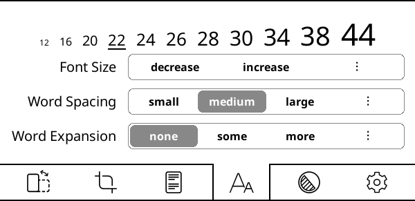

Attualmente stai leggendo la versione in italiano della Guida all'uso di Koreader. Volontari stanno traducendo questa guida in altre lingue. Abbiamo molte traduzioni in corso, come puoi vedere nello stato di traduzione complessivo di seguito. Ma viene mostrata la guida solo delle lingue che sono tradotte sopra il 50% per motivi di usabilità.
Oltre l'80% tradotto
- üá®üá≥ Cinese (Scrittura Han semplificata)
- üá∞üá∑ Coreano
- üá∑üá∏ Serbo
- üá∏üá∞ Slovacco
- üáÆüá≥ Tamil
- üá∫üᶠUcraino
Tradotto dal 50% all'80%
Per vedere tutte le lingue attualmente in corso di traduzione e per contribuire agli sforzi di traduzione della guida per l'utente, visitate la pagina di traduzione Weblate del nostro progetto.
Stato complessivo della traduzione della guida per l'utente

Questa guida è stata progettata principalmente per gli schermi a colori. Se si utilizza per la prima volta, si consiglia di leggerla su un computer, un tablet o un cellulare. Perché vedere gli elementi dell'interfaccia utente evidenziati a colori vi faciliterà la vita durante l'apprendimento dell'uso di KOReader. Naturalmente è possibile leggerlo anche su un dispositivo e-ink, ma l'esperienza non sarà ottimale.
È possibile utilizzare la funzione di ricerca del browser per trovare un argomento o una parola chiave specifica (generalmente Ctrl + F). Se hai un suggerimento o una domanda relativa a questa guida per l'utente, puoi scrivere su questo thread di discussione github.
Le parti del testo di questa guida sono codificate a colori in base alle categorie:
PARTI DI KOREADER (BLU) |
Barra di stato, mappa del libro… |
PERCORSI DEL MENU (VERDE) |
MENU SUPERIORE /  / Evidenziato / Evidenziato |
APP ESTERNE (VIOLA) |
Calibre, Readwise, KoHighlights... |
Inoltre, in tutta la guida sono presenti diversi riquadri per informare o avvertire l'utente:
KOReader è sviluppato e sostenuto da volontari di tutto il mondo. Anche voi potete partecipare a questo progetto:
- Correzione di bug e implementazione di nuove funzionalità
- Traduzione del programma nella vostra lingua o miglioramento di una traduzione esistente
- Aiutare gli altri con le proprie conoscenze nei forum o nelle discussioni di GitHub.
Controlla la sezione Raggiungici per i link.
Ultimo aggiornamento della guida: 25-03-2025
- Cosa puoi fare con Koreader?
- INFORMAZIONI DI BASE SULL'UTILIZZO
- IMPARARE L'INTERFACCIA UTENTE
- MUOVERSI ATTRAVERSO IL LIBRO
- PERSONALIZZAZIONE DELL'ASPETTO DEL TESTO
Nonostante il suo aspetto minimalista, Koreader è un'applicazione molto potente e personalizzabile. Questa sezione è come un indice, orientato al "come fare". Quindi, se sei un nuovo utente, questo è il posto migliore per iniziare. Qui puoi leggere cosa può fare Koreader e imparare a farlo seguendo questi  link per andare alle sezioni menzionate.
- Modalità USB mass storage per i dispositivi supportati 
- Cloud storage (Dropbox/FTP/Webdav) con utenti registrati 
- KOReader può fungere da server SSH, quindi è possibile utilizzare un'applicazione SFTP o il proprio file manager per trasferire direttamente i file. 
- Con il plugin Calibre è possibile inviare libri dalla propria libreria Calibre direttamente ai dispositivi KOReader tramite wifi. 
- Con il plugin News downloader è possibile scaricare le notizie RSS e Atom sul proprio dispositivo come file HTML. 
- Con il plugin Wallabag è possibile recuperare gli articoli dal proprio account Wallabag (un servizio di read-it-later basato su server come Pocket). 
- Modificate i caratteri (compresi i vostri), la dimensione dei caratteri, il contrasto, il grassetto, la crenatura, la spaziatura delle parole, l'espansione delle parole, l'allineamento del testo, l'interlinea, la disposizione delle colonne, i margini...
- Utilizzate le potenti modifiche di stile incluse o scrivetene di vostre per modificare con precisione il modo in cui i libri vengono visualizzati. 
- Invertire i colori dello schermo per la modalità notte manualmente o automaticamente. 
- Regola automaticamente il calore del colore della luce frontale 
- Evidenziare il testo con stili e colori diversi, inserire segnalibri 
- Modalità a due tocchi per evidenziare punti accademici/più lunghi 
- Aggiungete note utilizzando una tastiera personalizzabile che include i modificatori diacritici 
- Fare degli screenshot 
- Traccia le statistiche di lettura, compresi i progressi di lettura, intervallo di tempo e visualizzazioni del calendario
- Esportare le note e le evidenziazioni sul dispositivo in formato testo, markdown, HTML, JSON o ritagli Kindle. 
- Sincronizzazione con servizi online come Joplin, Readwise, Memos, Flomo e XMNote 
- Potente File Browser dove è possibile copiare, spostare, rinominare, creare, eliminare file e cartelle ed eseguire operazioni in blocco. 
- Guardate la vostra libreria come volete, con molte viste dettagliate e a mosaico. 
- Aggiungete i libri ai vostri Favoriti per un accesso rapido o create delle Collezioni con ordinamento e filtri. 
- Widget Skim per saltare rapidamente tra pagine, capitoli e segnalibri. 
- L'esclusiva Mappa del libro consente di visualizzare una mappa a volo d'uccello del libro, con tutte le note e le evidenziazioni. 
- Browser di pagine per spostarsi tra le pagine come una bobina cinematografica. 
- Browser dei segnalibri per sfogliare facilmente i punti salienti e le note. 
- Creare un indice alternativo automaticamente o manualmente se non si gradisce quello fornito con il libro. 
- Nascondere ed escludere alcune parti del libro come Appendice, Indice, Riferimenti ecc. per un conteggio più accurato delle pagine. 
- Il potente sistema gestuale con oltre 200 azioni permette di controllare ogni aspetto di KOReader con un tocco o uno scorrimento. 
- Se si dispone di una tastiera (interna, cablata o bluetooth) è anche possibile assegnare scorciatoie da tastiera a queste azioni. 
- Oppure create i vostri menu con le vostre azioni preferite con Menu Rapido e accedete ad essi con un tocco o uno scorrimento. 
- Creare Profili per controllare ogni aspetto di KOReader e per automatizzare le azioni. 
- Cercare nel documento selezionando o inserendo testo (comprese le espressioni regolari)
- Ricerca nei segnalibri, nelle evidenziazioni e nelle note
- Cercate un testo in Wikipedia o nei dizionari installati e traducetelo con un tocco prolungato.
- Tradurre l'intera pagina in una volta sola tra più di 130 lingue
- Con il nostro potente sistema di plugin, potete anche discutere il testo con ChatGPT (dopo aver installato il plugin). 
- KOReader può aggiornarsi da solo. 
- Diminuire o spegnere la luce dello schermo dopo un intervallo di tempo prestabilito
- Impostate gli intervalli di aggiornamento della pagina in base alle diverse condizioni di lettura. 
- Impostare il proprio screensaver da molte opzioni come immagini casuali, copertina del libro, lettura, progresso, ecc.
- Impostate gli allarmi di limite di carica della batteria per evitare scariche totali o sovraccariche. 
- Impostare un avviso sull'utilizzo della memoria (utile per i dispositivi con memoria ridotta) e, facoltativamente, riavviare KOReader al raggiungimento di questo limite. 
- Ritagliare i margini automaticamente o manualmente
- Ridisposizione dei documenti per estrarre il testo e facilitare la lettura su uno schermo piccolo
- Applicate l'OCR a documenti senza livelli di testo, come la scansione di vecchi libri. 
- Diversi tipi di zoom e direzioni di scorrimento delle pagine per leggere facilmente documenti a più colonne come gli articoli scientifici. 
- Raddrizza automaticamente i documenti inclinati, come la scansione di vecchi libri. 
- Salvate i vostri punti evidenziati direttamente in PDF, per poterli visualizzare senza KOReader. 
- Funzione speciale del pannello di zoom per la lettura dei manga. 
- Impostazioni di refresh dello schermo regolabili per un perfetto bilanciamento tra ghosting e velocità. 
- Aggiungere le proprie modifiche allo stile CSS per i libri. 
- Sistema di patch utente che consente di modificare i comportamenti fondamentali di KOReader. 
- Create un codice QR dagli appunti per condividere testo e collegamenti con altri dispositivi.
- Visualizzare il sorgente HTML di un documento EPUB
- Creare e modificare file di testo sul dispositivo
- Aprire un emulatore di terminale ed eseguire i comandi sul dispositivo.
- Vedere le statistiche di utilizzo della CPU, della memoria e della batteria
KOReader supporta i formati PDF, EPUB, DJVU, MOBI, CBZ, CBT, DOCX, RTF, HTML, TXT, XPS, FB2, PDB, CHM e MD. Può anche aprire archivi ZIP e mostrare file immagine.
Ci sono molti modi per trasferire i documenti sul dispositivo. Si noti che potrebbe essere necessario riavviare KOReader per indicizzare i documenti trasferiti (o aggiornare la directory se si dispone di Pocketbook/Android).
Oltre a trasferire i file come si farebbe con l'applicazione di lettura integrata, sono disponibili altre opzioni a seconda del dispositivo:
- Modalità di archiviazione di massa USB in KOReader: Questa modalità è disponibile per KOBO e alcuni dispositivi CERVANTES.
- Cloud storage (Dropbox/FTP/Webdav): Per utilizzare questa funzione è necessario aggiungere account per un server di archiviazione cloud tramite il menu mostrato di seguito. Il processo viene spiegato tramite i pulsanti info nel menu durante l'aggiunta degli account:
MENU SUPERIORE (nel Browser dei file) /
 / Cloud storage
/ Cloud storage - Accesso SSH/SFTP:KOReader può agire come un server SSH, a cui si può accedere da un computer per trasferire file (disponibile su Kobo, Kindle, Cervantes). È possibile utilizzare un'applicazione SFTP (come Filezilla) o accedere tramite il file manager, se il sistema operativo lo supporta. Consultate la nostra wiki per sapere come fare ed anche il box di avviso qui sotto.
- Trasferimento da Calibre:Con il plugin Calibre potete inviare documenti dalla vostra libreria Calibre direttamente ai vostri dispositivi KOReader tramite una connessione wifi. Consultate la nostra wiki per sapere come fare.
- News downloader: Con questo plugin è possibile scaricare le voci di notizie RSS e Atom come file HTML. Consultate wiki per sapere come fare.
- Wallabag: Con questo plugin è possibile recuperare articoli da Wallabag, un servizio di read-it-later basato su server come Pocket. Per ulteriori informazioni, consultare la pagina wiki.
ATTENZIONE Fate attenzione se decidete di utilizzare la funzione SSH senza password, perché questo consente l'accesso aperto al vostro dispositivo. Tuttavia, se si utilizza una rete wifi locale e si attiva la rete wifi del dispositivo per un breve periodo, il rischio è trascurabile.
Per accedere ai libri sono disponibili i seguenti metodi:
- File Browser - La sezione dedicata è qui: Utilizzo del File Browser
- Favoriti - Un elenco a cui è possibile aggiungere i libri premendo a lungo su di essi nel File Browser
- Cronologia - Elenco dei libri aperti dall'utente
- Collezioni - Elenchi di libri personalizzati creati da voi. La sezione dedicata è qui: Collections
È possibile modificare l'aspetto di queste schermate da:
 / Modalità di visualizzazione
/ Modalità di visualizzazioneSe si desidera modificare il numero di elementi visibili in queste schermate, guardare qui:
/ Impostazioni / Impostazioni del mosaico e dell'elenco dettagliatoÈ possibile assegnare gesti per ciascuna di queste finestre di dialogo. Ad esempio, mentre si legge un libro, è possibile accedere alla finestra della Cronologia o dei Favoriti con un gesto e aprire un altro libro senza passare dal File Browser.
È possibile cercare un libro nella schermata della Cronologia per nome del file o metadati del libro dal pulsante del menu ad hamburger in alto a sinistra.
Si può anche impostare KOReader per iniziare con la schermata dei Favoriti o della Cronologia invece del File Browser attraverso:
/ Avvia con
Nell'immagine qui sopra, si possono vedere le posizioni delle zone di tocco predefinite di KOReader. Per mostrare il menu principale o il menu inferiore è possibile toccare le zone indicate. È anche possibile scorrere verso il basso la zona superiore per visualizzare il menu principale. Su dispositivi non touch come Kindle 4 è possibile aprire il menu inferiore premendo il pulsante che corrisponde all'azione INVIO/OK.
Se si desidera aprire entrambi i menu contemporaneamente, si possono impostare le zone del menu superiore per aprire entrambi in menu ( superiore e inferiore) nello stesso momento attraverso:
 / Tocchi e Gesti / Attiva il menu
/ Tocchi e Gesti / Attiva il menu
Corner tap zones può essere utilizzato per molti tipi di gesti diversi, tra cui TOCCO, DOPPIO TOCCO, TOCCO CON DUE DITA e TOCCA E TIENI PREMUTO.
Le zone PAGINA PRECEDENTE e PAGINA SUCCESSIVA possono essere utilizzate anche per i gesti DOPPIO TOCCO contemporaneamente.
La zona Barra di Stato può essere sfruttata per il ciclo tra le varie voci della barra di stato se è visibile solo un elemento. Se tutti gli articoli sono visibili, il tocco mostrerà e nasconderà la barra di stato.
- Modifica del carattere*:MENU SUPERIORE / / Carattere
- Ingrandire il carattereMENU INFERIORE /

- Rendere il carattere in grassettoMENU INFERIORE /

- Invertire i colori sullo schermo (bianco su nero)MENU SUPERIORE / / Modalità notte
È inoltre possibile modificare altre opzioni di formattazione dal MENU INFERIORE per perfezionare l'aspetto del testo. Questi sono solo consigli rapidi per iniziare, naturalmente. Abbiamo un'intera sezione dedicata alla PERSONALIZZAZIONE DELL'ASPETTO DEL TESTO
È possibile controllare l'illuminazione dello schermo tramite questo menu. Se si dispone di un'illuminazione calda (LED bianchi normali e arancioni), è possibile controllarla separatamente da questa finestra di dialogo. È anche possibile definire un gesto per questa finestra di dialogo:
/ RetroilluminazioneIn questo menu è possibile scegliere la copertina di un libro o un'immagine personalizzata come screensaver:
/ Schermo / Schermata di sospensioneÈ possibile utilizzare i file JPG/PNG come salvaschermo (le immagini in scala di grigi correttamente retinate sono le più belle). Trasferire i file dal computer in una cartella qualsiasi del dispositivo. Scegliere questa cartella come cartella dello screensaver tramite questo menu:
/ Schermo / Schermata di sospensione / TappezzeriaFare riferimento a questo post del forum Mobileread per informazioni avanzate sulla preparazione delle immagini dello screensaver.
Se si cercano informazioni su scorciatoie da tastiera, cliccare qui per andare nella sezione. Questa voce spiega solo l'uso della tastiera.
- Toccare l'esterno del campo di immissione per chiudere la tastiera, toccare il campo di immissione per visualizzare nuovamente la tastiera.
- Scorri verso l'alto sui tasti per inserire la versione maiuscola di quella lettera (o minuscolo se si è già in modalità shift)
- È possibile modificare l'aspetto della tastiera:
MENU SUPERIORE / / Dispositivo / Tastiera / Impostazioni aspetto tastiera
- È possibile selezionare più di un layout:
MENU SUPERIORE / / Dispositivo / Tastiera / Layouts della tastiera
- È possibile passare da un layout all'altro toccando l'icona
 sulla tastiera
sulla tastiera
La tastiera Koreader consente di inserire caratteri extra quando si tocca e si tiene premuto un tasto. I caratteri extra usati più di frequente sono mostrati di seguito. È possibile toccare e tenere premuto il tasto nel riquadro grigio per ottenere i caratteri circostanti:

Oltre al popup premuto a lungo, è possibile inserire questi caratteri extra anche passando il dito su un tasto. Nell'esempio seguente, è possibile scorrere il dito verso l'alto sul tasto a per inserire una A maiuscola o scorrere in altre direzioni per inserire i caratteri mostrati. Si noti che l'esempio mostrato include la finestra a comparsa completa a scopo dimostrativo. Non è necessario aprire questa finestra a comparsa, è possibile scorrere direttamente sui tasti. Una volta che ci si abitua alla posizione dei caratteri extra, è possibile inserirli molto più rapidamente in questo modo.

Se questa funzione interferisce con il vostro utilizzo, potete disattivarla deselezionandola:
/ Dispositivo / Tastiera / Fare scorrere per inserire caratteri aggiuntiviInoltre, sono disponibili alcune scorciatoie per facilitare la manipolazione del testo. È possibile toccare e tenere premuto questi tasti per eseguire altre azioni:
- Freccia sinistra - Sposta il cursore all'inizio della riga
- Freccia destra - Sposta il cursore alla fine della riga
Anche il tasto backspace si comporta in modo diverso quando si eseguono gesti di scorrimento su di esso:
- Toccare: Cancellare un carattere
- Premere a lungo: Cancellare l'intera riga
- Scorrere a sinistra: Cancella una parte della parola a sinistra del cursore
- Scorrere verso l'alto: Cancella l'intera parola
Per ulteriori informazioni, è possibile consultare la pagina wiki relativa.
KOReader integra anche la tastiera a tratto cinese per l'immissione di caratteri cinesi semplificati e tradizionali. Potete trovare maggiori informazioni al riguardo nella nostra wiki.
Questo plugin consente di regolare il calore della luce frontale nei dispositivi con luce naturale (gialla/arancione) e di impostare la modalità notturna (colori dello schermo invertiti - testo bianco su sfondo nero) automaticamente in base ad una pianificazione. Può controllarli entrambi o si può scegliere la modalità controllo del solo calore o controllo della sola modalità notturna, in modo da poter regolare manualmente l'altro.
Questo plugin è abilitato di default quando si installa KOReader. Se per qualche motivo non è presente nel menu, è possibile attivarlo qui:
/ Altri strumenti / Mantieni attivoÈ possibile regolare automaticamente il calore della luce frontale dello schermo in due modi diversi:
Pianificazione fissa: In questa modalità il calore della luce anteriore cambia in base al programma giornaliero inserito. Questa modalità è statica, non tiene conto della durata della luce diurna. L'orario rimane invariato per tutto l'anno.
Posizione del Sole: Questa opzione calcola la posizione del Sole nella tua posizione secondo le coordinate e altitudine impostate. Il calore della luce frontale viene regolato gradualmente in base ai dati calcolati sulla posizione del Sole. Questa è una modalità dinamica. Poiché la durata della luce diurna varia nel corso dell'anno, il plugin regola il programma di conseguenza.
Per prima cosa, date un'occhiata a questa immagine per familiarizzare con i termini utilizzati nel plugin:

- Accedere al menu del plugin: MENU SUPERIORE / / Schermo / Modalità calore e notte automatici
- Toccare la voce di menu Attiva, quindi toccare Secondo l'orario prestabilito
- Tornare al menu precedente e toccare la voce di menu Impostazioni di pianificazione fisse
- Impostare il programma di transizione del calore impostando qui i tempi per le varie voci. Per una spiegazione delle voci, fare riferimento all'immagine qui sopra.
- Accedere al menu del plugin:
MENU SUPERIORE / / Schermo / Modalità calore e notte automatici
- Toccare la voce Attiva e quindi Secondo la posizione del sole
- Tornare al menu precedente e toccare Impostazioni località. Impostare le corrette coordinate> (necessario) e l'altitudine (facoltativo) e dare un nome alla località.
- Tornare al menu precedente e toccare Impostazioni modalità calore e notte
- Impostare il programma di transizione del calore impostando qui i tempi per le varie voci. Per una spiegazione delle voci, fare riferimento all'immagine qui sopra.
Potete vedere la vostra pianificazione attuale tramite la voce Parametri attualmente attivi.

Mentre si impostano le percentuali di luce calda per intervalli diversi, si può anche impostare l'intervallo su Modalità nottuna che inverte i colori dello schermo all'inizio dell'intervallo. Se la luce frontale minima è ancora troppo intensa o se si preferisce uno sfondo scuro della pagina, è possibile attivare questa funzione. Per attivarlo, nella finestra di dialogo sottostante, toccare il pulsante Modalità notte e quindi Applica.
Quando si esegue questa operazione, nel menu accanto a questo intervallo appare l'icona della luna. Per disattivare la modalità notturna, basta disabilitare la casella di controllo Modalità notturna in quell'intervallo.

Questa funzione accende la luce frontale al tramonto e la spegne all'alba in base ai parametri attualmente attivi in questo plugin. È possibile annullare questa modifica accendendo/spegnendo manualmente la luce frontale. All'alba/tramonto successivo, Modalità calore e notte automatici lo attiverà di nuovo se necessario. È possibile attivarla selezionando la voce di menu Retroilluminazione spenta durante il giorno in questo plugin.
Se si desidera che il calore della luce anteriore cambi rapidamente, invece di un cambiamento più graduale:
- Impostare la modalità su Impostazioni di pianificazioni fisse seguendo le istruzioni precedenti
- E regolare le impostazioni come nell'immagine sottostante:

Come si può vedere nelle impostazioni qui sopra, c'è solo un minuto di differenza tra la transizione giorno-notte. Quindi il calore dello schermo passa da 0 a 100 (o viceversa) in un solo minuto. È possibile aumentare questa separazione temporale per allungare la durata della transizione.
KOReader ha un'interfaccia utente semplice, prevalentemente in bianco e nero, perché i gradienti e le diverse tonalità di grigio possono provocare lampi e immagini fantasma sugli schermi e-ink, degradando l'esperienza di lettura.
KOReader dispone di 2 interfacce principali: schermo di lettura e file browser. Qui spiegheremo lo schermo di lettura. Il file browser è spiegato in dettaglio in questa sezione della guida.
SCHERMATA DI LETTURA ha due menu:
- Il MENU SUPERIORE comprende voci di menu relative all'uso generale di KOReader. Qui si accede ai libri, alle preferenze di KOReader, ai plugin e così via.
- Il MENU INFERIORE si concentra sulle opzioni per la formattazione del documento, come peso/dimensione dei caratteri, interlinea ecc. Durante la regolazione dell'aspetto del testo, si interagisce principalmente con il MENU INFERIORE.


L'immagine qui sopra mostra gli elementi che si possono vedere sullo schermo del lettore quando si legge un libro:
- Icone indicatore: Queste icone informano su determinati processi e stati in corso. Vengono visualizzate nell'angolo superiore sinistro dello schermo durante alcune operazioni. Normalmente sono più piccole, ma qui le mostriamo più grandi per maggiore chiarezza. La prossima sezione spiega in dettaglio queste icone di segnalazione: Icone indicatore
- Barra di stato: Si tratta di un'area altamente configurabile in cui è possibile visualizzare varie informazioni sul libro e su KOReader. Fare clic qui per accedere alla sezione:Barra di stato
- Barra di stato alternativa: In aggiunta alla barra di stato predefinita Barra di stato, abbiamo una barra di stato alternativa che appare in cima alla pagina se la si attiva. Clicca qui per i dettagli: Barra di stato
- Numeri di pagina di riferimento: Se l'editore del libro ha incluso i numeri di pagina della versione cartacea del libro, li vedrete così. Fare clic qui per ulteriori informazioni: Numerazione delle pagine e numeri di pagina di riferimento
- Tipi di evidenziazione: Qui si possono vedere i diversi tipi di evidenziazione. È inoltre possibile creare evidenziazioni colorate se il dispositivo dispone di uno schermo adatto. Fare clic qui per accedere alla sezione:Segnalibri, evidenziazione e note
- Marcatore di note: L'icona del marcatore di note viene visualizzata quando si aggiunge una nota a un'evidenziazione. Esistono diversi tipi di marcatori di note. Fare clic qui per maggiori informazioni: Segnalibri, evidenziazione e note
KOReader dispone di alcuni indicatori che informano su alcuni processi e stati in corso, come si può vedere nell'immagine qui sopra. Sono visibili nell'angolo in alto a sinistra dello schermo durante alcune operazioni.
   
|
Icone di visualizzazione parziale Questo gruppo di icone appartiene alla procedura di visualizzazione parziale e probabilmente le vedrete più spesso delle altre. Queste icone vengono mostrate quando si modificano le impostazioni dal menu inferiore. Questa funzione consente di visualizzare in anteprima le regolazioni dell'aspetto del testo in modo molto più rapido, renderizzando solo il capitolo corrente invece dell'intero libro. Anche la rotazione dell'orientamento dello schermo è ora molto più veloce grazie a questa funzione. Questa funzione è ABILITATA per impostazione predefinita. Se necessario, può essere disattivata per ogni libro (con un tocco) o a livello globale (con un tocco prolungato): MENU SUPERIORE /
/ Documento / Abilita rendering parzialeDopo aver confermato le modifiche, l'intero libro deve essere renderizzato di nuovo, quindi si tratta di una procedura in più fasi. Queste icone mostrano la fase di rendering come spiegato di seguito: |
|
In questa fase, il documento viene parzialmente renderizzato. Il conteggio delle pagine, le informazioni sul piè di pagina e molte altre cose sono innacurate. È possibile vedere l'aspetto delle nuove impostazioni e modificarle ulteriormente. In questo stato è possibile anche girare le pagine e saltare i link. |
|
Il rendering completo avviene in background. È ancora possibile girare le pagine, saltare i link, modificare le impostazioni. |
|
Il rendering completo è stato eseguito, ma non ancora applicato perché KOReader è in attesa di essere inattivo per ricaricare il resto del libro (inattivo=non interagire con il dispositivo). È ancora possibile girare le pagine, saltare i link, cambiare le impostazioni. |
|
|
L'utente è rimasto inattivo per un po', quindi KOReader sta ricaricando l'intero documento. In questa fase KOReader viene bloccato per impedire l'interazione. |
 |
Icona di evidenziazione Questa icona viene visualizzata quando si è in modalità Selezione ed evidenziazione. KOReader ha una modalità di evidenziazione aggiuntiva che consente di avviare un'evidenziazione e di girare le pagine per creare lunghe evidenziazioni che possono estendersi su più pagine. Per saperne di più, consultare la sezione Segnalazioni, evidenziazioni e note di questa guida. Quando si avvia un'evidenziazione in questa modalità, questa icona viene visualizzata nell'angolo per ricordare che si è ancora in modalità di evidenziazione. Scompare quando si termina l'evidenziazione selezionando la fine del passaggio o quando si annulla l'evidenziazione (toccando di nuovo l'inizio dell'evidenziazione o l'icona di questa evidenziazione). |
 |
Icona della palla Pokemon Questa icona compare quando si preme a lungo su una parola (intenzionalmente o accidentalmente). KOReader ha un normale menu a pressione prolungata. E un ulteriore menu molto lungo quando si tiene premuto il dito per più di 3 secondi. Questa icona indica che è stato attivato questo menu a pressione molto lunga. |
 |
Icona della modalità libro aperto Questa icona viene visualizzata quando si tocca l'angolo in alto a sinistra se:
Questa modalità visualizza temporaneamente l'intera pagina senza ritaglio, ridimensionata per adattarsi allo schermo. In questa modalità è possibile girare le pagine. Per uscire da questa modalità, toccare questa icona. |
Tipi di documenti come epub, mobi, html naturalmente non hanno numeri di pagina fissi perché sono documenti riadattabili. Ciò significa che questi documenti possono essere regolati in base alle dimensioni dello schermo e all'orientamento del dispositivo (a differenza di file pdfs o djvu per esempio, che hanno un formato pagina fisso).
Se si aumenta la dimensione dei caratteri di un documento adattabile, aumenterà anche il numero di pagine, perché ora meno testo troverà posto in una singola pagina. Questo a volte causa un problema, perché un'evidenziazione fatta a pagina 38 potrebbe trovarsi a pagina 42 dopo la regolazione dei caratteri.
KOReader supporta la funzione Numeri di pagina di riferimento che consente agli editori di incorporare i numeri di pagina dei libri stampati direttamente nella versione e-book. Quando si attiva questa funzione, KOReader non calcola direttamente i numeri di pagina. Invece, mostra i numeri di pagina incorporati dall'editore. Ciò significa che il numero di pagina visualizzato nella barra di stato corrisponde alla versione stampata del libro.
Vantaggi dei numeri di pagina di riferimento:
- I numeri delle pagine di riferimento consentono di effettuare citazioni accurate grazie alla corrispondenza con i numeri di pagina presenti nelle versioni stampate.
- I numeri di pagina di riferimento possono aiutare la navigazione, soprattutto per i lettori che hanno familiarità con la versione cartacea di un libro. Possono aiutare a trovare più facilmente passaggi o citazioni specifiche nella versione digitale.
- Poiché i libri digitali possono essere letti su diversi dispositivi e piattaforme, ciascuno con le proprie dimensioni dei caratteri e impostazioni di visualizzazione, i numeri di pagina visualizzati possono variare in modo significativo. I numeri di pagina di riferimento forniscono un punto di riferimento coerente quando si legge lo stesso libro su dispositivi diversi, come e-reader e telefono, allo stesso tempo.
È possibile attivare questa funzione da:
 / Pagine di riferimento / Utilizzare i numeri di pagina di riferimento
/ Pagine di riferimento / Utilizzare i numeri di pagina di riferimentoSe si seleziona anche l'opzione Mostra le etichette della pagina di riferimento nel margine dallo stesso menu, i numeri di pagina verranno visualizzati accanto al testo in caratteri piccoli.
Questo menu appare solo se nel libro sono incorporati numeri di pagina di riferimento.
KOReader ha due barre di stato, una barra di stato inferiore che è abilitata per impostazione predefinita. Abbiamo anche una barra di stato alternativa che appare nella parte superiore della pagina se la si attiva. Questa barra di stato alternativa è disponibile solo nei documenti adattabili (epub, html, docx, rtf, txt...).
La barra di stato inferiore è quella più recente, che viene mantenuta attivamente. La barra di stato alternativa è un residuo delle versioni precedenti di KOReader, quindi non vi aggiungiamo nuove funzionalità. È comunque possibile attivare questa barra di stato alternativa, se la si ritiene utile. È possibile attivarla da:
/ Barra di stato alternativaDa questo menu è possibile configurare la barra di stato alternativa:
/ Barra di stato / Barra di stato alternativaLe istruzioni contenute nel resto di questa sezione riguardano la barra di stato inferiore.
Da questo menu è possibile configurare la barra di stato inferiore. Esplorate pure il sottomenu IMPOSTAZIONI per personalizzare la barra di stato a vostro piacimento.
/ Barra di statoSono molti gli elementi che si possono visualizzare nella barra di stato. Per impostazione predefinita, però, ne viene visualizzato solo uno alla volta e per passare da uno all'altro è necessario toccare la barra di stato. Se si desidera visualizzare tutte le voci contemporaneamente, è possibile attivarle da qui:
/ Barra di stato / Configura elementi / Mostra tutti gli elementi selezionati in una voltaSe è stata attivata l'opzione precedente, non è possibile nascondere la barra di stato toccandola. Se si desidera nasconderla, è necessario assegnare un gesto qui per spostare la barra di stato:
Ordinamento degli elementi della barra di stato:
/ Barra di stato / Configura elementi / Organizza elementi nella barra di statoEsiste un elemento speciale della barra di stato chiamato Testo personalizzato. Questo elemento può mostrare il testo scelto nella barra di stato. È possibile utilizzare questa funzione anche per creare un separatore tra gli elementi della barra di stato, come si può vedere nell'esempio seguente:

- Per prima cosa attivate questa opzione premendo brevemente su di essa da questo menu
MENU SUPERIORE / / Barra di stato / Elementi della barra di stato / Testo personalizzato (pressione lunga per modificare)
- Quindi premere di nuovo a lungo su di esso per aprire le impostazioni. Inserite un carattere "spazio" nella prima casella e inserite il numero di ripetizioni nella seconda casella, che determinerà la larghezza del separatore.
È possibile scegliere un altro carattere come separatore. È anche possibile spostare questo elemento, come altri elementi della barra di stato, per modificarne l'ordine e adattare i gruppi.
La barra dei progressi nella barra di stato mostra normalmente i progressi dell'intero libro. Ma può anche mostrare i progressi del capitolo corrente. Questo può essere utile, ad esempio, se un libro ha molti capitoli brevi. In questo caso potrebbe essere difficile vedere i progressi nel capitolo corrente, quindi la barra di stato del capitolo può essere più informativa. È possibile attivare la funzione da questo menu:
/ Barra di stato / Barra di progresso / Mostra la barra progresso capitoli inveceÈ inoltre possibile assegnare un gesto per passare dalla barra di avanzamento normale a quella dei capitoli. Questa azione si trova in:
In questa sede ci limiteremo a fornire una panoramica delle voci della struttura del menu superiore, in modo da familiarizzare con il menu. Informazioni dettagliate sono disponibili nelle sezioni correlate di questa guida.

- NAVIGAZIONE: Questo menu contiene voci che consentono di navigare nel libro che si sta leggendo. Tabella dei contenuti, segnalibri, mappa del libro...
- IMPOSTAZIONI DOCUMENTO: Questo menu contiene voci che consentono di modificare l'aspetto del libro. Impostazioni dei font, modifiche allo stile...
- IMPOSTAZIONI: Questo menu contiene le impostazioni di KOReader e del dispositivo. Inchiostro elettronico, luce, impostazioni dei gesti...
- STRUMENTI: Questo menu contiene i plugin che possono espandere le funzionalità di KOReader.
 CERCA: Questo menu contiene le voci relative alla ricerca e alla consultazione. Ricerca testi, dizionario, traduzione, Wikipedia...
CERCA: Questo menu contiene le voci relative alla ricerca e alla consultazione. Ricerca testi, dizionario, traduzione, Wikipedia...- FILE BROWSER: Questo pulsante apre il browser dei file, che è l'interfaccia per la gestione della libreria.
 PRINCIPALE: Questo menu contiene strumenti per accedere ai libri, come storia, preferiti, collezioni. In questo menu ci sono anche le voci informazioni sul libro, aggiorna e esci.
PRINCIPALE: Questo menu contiene strumenti per accedere ai libri, come storia, preferiti, collezioni. In questo menu ci sono anche le voci informazioni sul libro, aggiorna e esci.

Modalità di visualizzazione: Se si passa alla modalità ininterrotto, è possibile scorrere il documento come una pagina web. Questa modalità è più adatta ai tipi di schermo non e-ink (LCD, OLED). In modalità continua si perdono i margini superiore e inferiore, quindi il testo può essere tagliato sulla prima e sull'ultima riga dello schermo. Per risolvere questo problema è possibile attivare la Sovrapposizione delle pagine:
/ Sovrapposizione delle pagineModalità di resa grafica: Questa opzione determina il modo in cui il documento viene reso da KOReader. L'impostazione predefinita è WEB e generalmente non è necessario modificarla. Quando un libro (o una pagina web salvata) è molto complicato (larghezze o margini specificati, margini negativi, fluttuazioni ecc.) e il layout appare brutto o sovraccarica lo schermo, si possono provare altre modalità di rendering.
Zoom (dpi): Questa impostazione può essere considerata come un fattore di zoom generale per il documento (eccetto la dimensione dei caratteri). A 96 dpi (che è l'impostazione predefinita), le immagini del documento vengono rese alle loro dimensioni originali. In pratica si utilizza questa impostazione se si desidera ingrandire le immagini senza ingrandire il testo.

Spaziatura delle parole ed espansione delle parole le impostazioni sono correlate e determinano l'aspetto del testo quando è giustificato. Quando si giustifica il testo, viene aggiunto dello spazio tra le parole in modo che entrambi i bordi di ogni riga siano allineati con entrambi i margini. Poiché il numero di parole delle righe non è sempre uguale, nell'allineamento giustificato il testo deve essere compresso o espanso per riempire la riga.
Spaziatura delle parole: determina quanto i caratteri spazio in una riga di testo possono essere compressi per inserire più parole. Questa impostazione non influisce sulle parole, ma cambia solo lo spazio tra di esse.
Espansione delle parole: Se in una riga c'è troppo spazio bianco, quanto di questo può essere distribuito nelle parole espandendole. Questa impostazione influisce sull'aspetto delle parole. Se non si vuole che le parole si espandano, impostare questa opzione su nessuna.
È possibile sperimentare diverse impostazioni fino a ottenere un testo gradevole, quindi impostarle come predefinite tramite le rispettive finestre di dialogo.

Contrasto e Spessore font sono due opzioni che si possono usare per rendere il testo più chiaro (o più brillante). È possibile ottenere lo stesso aspetto con una di queste opzioni, ma utilizzano metodi diversi per ottenerlo. Naturalmente è possibile utilizzarle entrambe contemporaneamente.
Le differenze tra loro possono essere riassunte come segue:
+ Non cambia la larghezza dei caratteri, la lunghezza del libro rimane invariata
+ Non è necessario eseguire nuovamente il rendering del documento, più veloce
- Potrebbe avere un aspetto negativo su schermi LCD o a basso DPI
+ Utilizzerà i font pesati corretti, se installati
+ Si vede meglio su schermi LCD o a basso DPI
- Deve renderizzare nuovamente i font, più lento
Suggerimento per i caratteri regola il testo per la massima leggibilità in base alla griglia di pixel dello schermo. nativo utilizza le istruzioni di suggerimento interne al font, auto utilizza l'algoritmo di suggerimento di FreeType. auto è una scelta più sicura perché i file di font installati potrebbero avere istruzioni di suggerimento problematiche. auto gestisce meglio anche il testo CJK. È possibile provare diverse impostazioni per vedere quale si adatta meglio al proprio dispositivo.
Crenatura dei font regola la spaziatura tra le lettere per ottenere un risultato visivamente gradevole. L'impostazione predefinita è l'opzione migliore, che potrebbe rallentare l'apertura dei file (a seconda del dispositivo) ma ha un supporto migliore per le legature (si veda l'immagine qui sotto per un esempio), se è unito ai aimboli arabi e ad alcune altre scritture. Se il dispositivo è lento, si può provare con buono, che è più veloce e può ancora apparire corretto con il testo occidentale in caratteri latini.


Barra di stato alternativa abilita una barra di stato alternativa che è disponibile solo nei documenti adattabili (EPUB, HTML, DOCX, RTF, TXT...). Dopo averla abilitata, è possibile configurare la barra di stato alternativa tramite:
/ Barra di stato / Barra di stato alternativaStile incorporato e Caratteri incorporati determinano se gli stili e i font dell'editore incorporati nel documento saranno utilizzati (o ignorati) per la resa del documento. Si tratta di interruttori generali on/off. È possibile ottenere regolazioni più precise per il documento tramite:
/ Ritocchi di stileRidimensionamento dell'immagine determina il modo in cui vengono rese le immagini nel documento. Migliore ha un aspetto più gradevole, ma è più lento.
L'interfaccia utente e le opzioni di KOReader possono cambiare a seconda del tipo di file aperto. Esistono due categorie principali di documenti:
- Documenti a layout fisso (pdf, djvu, file immagine...)
- Documenti adattabili (epub, html, docx, rtf, txt...).
KOReader ha molte funzioni e il suo sistema di menu riflette questa complessità. Abbiamo una funzione di ricerca nel menu per trovare rapidamente le voci di menu. Se si ricorda il nome di una voce di menu ma non si ricorda dove si trova, è possibile utilizzare questa funzione:
/ Aiuto / Cerca nel menùInoltre, è possibile assegnare questa funzione a un gesto o aggiungerla al Menu Rapido per un accesso più rapido.
Nel menu in basso, se si tocca e si tiene premuto il nome di un'opzione, è possibile visualizzarne la spiegazione. |
|
È possibile cambiare la lingua dell'interfaccia tramite: MENU SUPERIORE /
/ Lingua |
|
Se si desidera modificare le dimensioni dell'interfaccia utente, esiste un'impostazione DPI per questo: MENU PRINCIPALE /
/ Schermo / DPI SchermoÈ possibile scegliere un valore dal menu o selezionare DPI personalizzati per inserire un valore per la regolazione fine: DPI più alti = interfaccia più grande. Si noti che nella barra inferiore è presente anche un'impostazione Zoom (dpi). Questa è relativa solo ai documenti. La spiegazione è riportata nella sezione successiva. |
Se si tocca e si tiene premuta una opzione o una voce del menù (peso del carattere, interlinea ecc.), si può impostare il suo valore come PREDEFINITO. Il nuovo valore sarà applicato solo ai libri aperti d'ora in poi. I libri aperti in precedenza manterranno le loro impostazioni. È possibile identificare i valori predefiniti con una stella (★) nel menu o come bordo nero intorno agli indicatori, come si vede di seguito: 

|
È possibile chiudere le finestre di dialogo a schermo intero (Cronologia, Indice, Statistiche di lettura ecc.) scorrendo verso il basso. (Ad eccezione della finestra Segnalibri. È possibile utilizzare qualsiasi gesto multi-scorrimento per chiuderla) |
È possibile scattare una screenshot facendo un lungo scorrimento diagonale con il dito. Anche toccando gli angoli diagonali opposti (in alto a sinistra ed in baso a destra) si otterrà uno screenshot. Questo secondo gesto può essere utilizzato, ad esempio, quando si visualizza un'immagine. Inoltre, se il dispositivo dispone di una tastiera, è possibile effettuare uno screenshot con la scorciatoia Alt + Shift + G. |
Se si vuole aprire una pagina a caso di un libro, esiste un'azione Salta a una pagina a caso che si può assegnare a qualsiasi gesto attraverso Impostazione dei gesti del menù Tocchi e gesti. |

Nelle finestre di dialogo contenenti pulsanti freccia di regolazione come quella sopra, è possibile toccare e tenere premuto sui pulsanti freccia per modificare il valore con incrementi maggiori. È possibile chiudere questo tipo di finestra di dialogo (non a schermo intero) toccando all'esterno della finestra stessa. Questo tipo di finestra di dialogo può essere spostato tenendo premuto il titolo della finestra e trascinandolo. È possibile rendere questo tipo di finestra di dialogo semitrasparente toccando e tenendo premuto il titolo della finestra (quando si vuole vedere il testo sotto di essa mentre si regola un valore). |
Creazione di nuove cartelle - Quando si deve scegliere una posizione (cloud storage, spostarsi nell'archivio dei plugin, esportare un plugin), KOReader presenta una schermata che assomiglia al nostro File Browser. Se si desidera creare una nuova cartella durante la scelta:
|
KOReader supporta la ricerca nel dizionario in documenti EPUB e PDF/DJVU scansionati. Per visualizzare la definizione o la traduzione del dizionario, è sufficiente toccare e tenere premuta una parola. Se si tiene premuta una parola, si apre una finestra di dialogo in cui è possibile cercare altre occorrenze nel documento o consultarla su Wikipedia. |
Se si desidera controllare la data corrente, è possibile toccare l'orologio nel MENU SUPERIORE. |
KOReader dispone di tre tipi di scorrimento tattile. È possibile accedervi da:
/ Tocchi e gesti / Scorrimento- Scorrimento classico: Questa modalità funziona esattamente come lo scorrimento sul telefono/tablet.
- Scorrimento turbo: Questa modalità consente di scorrere più velocemente rispetto allo scorrimento classico. Inoltre, è possibile scorrere diverse pagine senza sollevare il dito. L'entità dello scorrimento è proporzionale alla distanza da cui si muove il dito dopo aver avviato lo scorrimento.
- Scorrimento al rilascio: Questo tipo di scorrimento è più adatto agli schermi e-ink. Infatti, a differenza di altri tipi di scorrimento, questa modalità non aggiorna continuamente la pagina durante lo scorrimento. Funziona come lo scorrimento classico, ma i passaggi intermedi non vengono mostrati. Quindi, quando si scorre con il dito e poi si rilascia, la pagina salta in quella posizione. È particolarmente utile per riposizionare e regolare la vista se il libro contiene immagini o tabelle e si desidera vederle tutte.
Questa utile funzione funziona come il pulsante Indietro del browser. Quando si passa a un'altra parte del libro utilizzando i widget scorri documento, segnalibri, la mappa del libro ecc. KOReader ricorda la posizione precedente. Ciò è utile, ad esempio, se si segue un link interno o un riferimento. Con un solo tocco è possibile tornare al punto di partenza. È possibile accedere a questa funzione da:
/ Torna alla posizione precedenteÈ anche possibile andare avanti, dallo stesso menu. Questa funzione è assegnata al gesto  multi-scorrimento. È possibile assegnare questo gesto a un altro (come toccare un angolo) o aggiungerlo al Menu Rapido.
KOReader normalmente esegue un aggiornamento completo delle pagine contenenti immagini (che si possono osservare come un flash nero). Il motivo è quello di eliminare i residui e le immagini fantasma della pagina precedente. Ma questo potrebbe non essere necessario, a seconda del dispositivo e delle preferenze personali. È possibile disattivare questo comportamento di aggiornamento automatico qui:
/ Schermo / Impostazioni E-ink / Frequenza di aggiornamento completa / Aggiorna sempre pagine con immaginiInoltre, da qui è possibile disattivare il lampeggiamento nero dell'interfaccia utente, se disturba:
/ Schermo / Impostazioni E-ink / Impedisci il lampeggio scuro nell'interfaccia utenteIn KOReader esistono diversi modi per spostarsi all'interno del documento, con i rispettivi punti di forza. È possibile utilizzare la funzione:
- Scorri Documento
- Mappa del libro
- Navigatore di pagina
Scorri documento è uno strumento di navigazione molto funzionale. È possibile utilizzarlo per:
- Passare a qualsiasi parte del libro toccando direttamente la barra di avanzamento o inserendo il numero di pagina
- Navigare tra i capitoli
- Navigare tra i segnalibri
Come aprire Scorri documento:
- Con un tocco prolungato sull'area barra di stato nella parte inferiore dello schermo (deve comunque essere prima abilitata attraverso la voce Barra di stato / Pressione lunga sulla barra di stato per scorrere dal menu superiore)
- Da questo menu: MENU SUPERIORE / / Scorri documento
- È possibile assegnare un gesto ad esso
- E' possibile aggiungerlo al proprio Menu Rapido
Per prima cosa, diamo una rapida occhiata al diagramma sottostante. Si noterà che abbiamo due diversi Scorri documento. Hanno le stesse funzioni, solo le dimensioni sono diverse:
- Scorri documento completo: Questo è il widget Scorri documento che si vede quando si installa KOReader. È più grande del widget compatto, quindi i pulsanti sono più comodi da premere. Questo widget si apre al centro dello schermo.
- Scorri documento compatto: È la versione più sottile dello strumento predefinito . Può essere più utile, ad esempio, se si stanno realizzando delle evidenziazioni. Poiché questo widget è più piccolo e si apre nella parte superiore o inferiore dello schermo, non ostruisce la pagina come lo strumento predefinito.
Se si desidera utilizzare lo strumento Scorri documento compatto, è possibile farlo scegliendo In alto o In basso da questo menu:
/ Navigazione / Posizione del dialogo di scorsa:TIP Entrambi gli strumenti sono mobili. È possibile spostarli premendo su un'area vuota dello strumento e trascinandoli. È inoltre possibile rendere queste finestre di dialogo semitrasparenti premendo a lungo su un'area vuota dello strumento. Ma la semitrasparenza si attiva solo nella posizione iniziale. Una volta spostata, la pressione prolungata la riporta nella posizione iniziale.
Torniamo ora al diagramma. Si può notare che su alcuni pulsanti sono presenti due descrizioni di colore diverso: blu e arancione. Ciò significa che questo pulsante ha due funzioni: un'azione di pressione normale e un'azione di pressione prolungata. Se si preme normalmente, si esegue la funzione BLUE. Se si preme più a lungo, viene eseguita la funzione ARANCIONE.

Spiegazione delle voci numerate (azione di pressione prolungata in grassetto):
- Saltare all'inizio del capitolo precedente / Saltare alla prima pagina del libro
- Salta al segnalibro precedente / Salta al primo segnalibro del libro
- Aggiungi un segnalibro alla pagina corrente / Aprire la finestra di dialogo dei segnalibri
- Salta al segnalibro successivo / Salta all'ultimo segnalibro del libro
- Saltare all'inizio del capitolo successivo / Saltare all'ultima pagina del libro
- Salto indietro (-) o avanti (+) di tante pagine
- Questo numero indica il numero di pagina corrente. Toccandolo, si apre una finestra di dialogo che consente di inserire un numero di pagina o una percentuale per saltare direttamente. Se si preme a lungo, si torna alla pagina in cui è stato aperto Scorri documento. È utile, ad esempio, se si desidera controllare rapidamente un'altra parte del libro e tornare alla lettura da dove si era interrotta.
- Questa è la barra di avanzamento. Le linee sottili sono i segni di capitolo che indicano l'inizio dei capitoli. È possibile toccare questa barra di avanzamento per passare a quella parte del libro. Le frecce piccole sono frecce di inizio sessione che indicano il punto in cui si è iniziato a leggere il libro nella sessione corrente. Queste frecce si ripristinano quando si passa da un libro all'altro.
- Questo pulsante nello strumento compatto funziona come la funzione di pressione prolungata dell'elemento numero 7. Si torna alla pagina in cui è stato aperto lo strumento Scorri documento. È utile, ad esempio, se si desidera controllare rapidamente un'altra parte del libro e tornare alla lettura da dove si era interrotta.
TIP Se si vuole aprire una pagina a caso di un libro, esiste un'azione Salta a una pagina a caso che si può assegnare a qualsiasi gesto attraverso la voce Impostazione dei gesti nel menu Tocchi e gesti.
KOReader può mostrare i confini dei capitoli dei documenti sugli strumenti Scorri documento e Barra di avanzamento.

Se il documento ha troppi livelli di intestazione, i segni di capitolo possono apparire affollati come nell'esempio precedente. È possibile modificare la profondità dei livelli di marcatura ToC visibili tramite:
/ Impostazioni / Barre di progresso
È possibile utilizzare questo ToC ridotto anche per:
- titoli dei capitoli (se è mostrato nella barra di stato)
- navigazione tra capitoli
- stime del tempo di lettura residuo
Queste opzioni si trovano nello stesso menu.
Se il documento non ha un sommario, è possibile attivare la Tabella alternativa dei contenuti. Quando questa impostazione è attivata, KOReader costruisce un ToC dai titoli del documento (se disponibili) o dai singoli file HTML dell'EPUB. Premere a lungo su questa voce di menu per ulteriori informazioni:
/ Impostazioni / Tavola alternativa dei contenutiPer ulteriori informazioni sugli strumenti di tabella dei contenuti disponibili in KOReader, consultare questa sezione della guida: TABELLA DEI CONTENUTI TOOLS
La mappa del libro è una funzione potente e unica di KOReader che può essere molto utile per avere una visione d'insieme di un libro. Ad esempio, se state leggendo un libro in modo non lineare, saltando alcune parti per leggerle in seguito, sarebbe difficile seguire i vostri progressi. La mappa del libro può mostrare a colpo d'occhio quali parti del libro sono già state lette.
Inoltre è possibile:
- Vedere quanto tempo si è trascorso su ogni pagina (se il plugin Statistiche di lettura è abilitato)
- Controllate quali pagine hanno segnalibri, evidenziazioni e note
- Navigare direttamente in qualsiasi parte del libro, come lo strumento Scorri documento
È possibile accedere alla mappa del libro tramite il menu e si può anche assegnare un gesto per un accesso più rapido:
/ Mappa del libroQuando si apre la Mappa del libro per la prima volta durante la lettura di un libro, sarà in modalità visualizzazione a griglia, che racchiude tutti i capitoli in un'unica schermata per offrire la migliore panoramica iniziale del contenuto del libro. Per ottenere informazioni dettagliate sull'utilizzo, toccare l'icona Info nell'angolo in alto a sinistra. È possibile chiudere la Mappa del libro toccando la X nell'angolo in alto a destra o con un qualsiasi gesto di scorrimento multiplo (su-giù, sinistra-destra ecc.).

- Limiti dei capitoli
- Le barre nere indicano le pagine lette. Le barre più alte indicano il tempo trascorso nella pagina.
- L'icona del segnalibro mostra le pagine inserite nei segnalibri, come dice il nome stesso.
- L'icona quadrata a righe mostra le pagine con le evidenziazioni.
- L'icona della matita mostra le pagine con note.
- I numeri in un cerchio indicano le posizioni precedenti. Quando si sceglie Torna alla posizione precedente dal menu, si torna indietro in ordine.
- Il triangolo mostra la pagina corrente.
- La barra di scorrimento verticale mostra il livello di visualizzazione attuale.
- La barra di scorrimento verticale mostra il livello di larghezza attuale della pagina.
È possibile personalizzare la Mappa del libro modificando queste opzioni:
- Prima prova a passare il dito a SINISTRA e DESTRA lungo il bordo inferiore dello schermo per modificare la larghezza delle colonne che indicano le pagine e osservare come cambia la scala della mappa.
- Quindi provare a scorrere UP e Giù lungo il bordo sinistro dello schermo per cambiare la profondità del titolo del capitolo e passare alla schermata Vista piatta. Vedere gli esempi seguenti.
Oltre alla vista predefinita a Griglia di cui sopra, qui si può vedere la Vista piatta a sinistra e Vista a griglia senza titoli di capitolo a destra. Si noti il cambiamento della barra di scorrimento verticale sinistra tra le viste. Se si desidera tornare alla visualizzazione predefinita, è possibile premere a lungo l'icona delle informazioni nell'angolo superiore sinistro.


Quando si tocca l'icona del menu nella schermata Mappa del libro, viene presentato il menu qui sopra. Le opzioni del menu sono spiegate di seguito:
- informazioni sulla mappa del libro: Breve spiegazione dell'uso della mappa del libro e descrizione delle icone.
- Gesti disponibili: Gesti che si possono usare per modificare le impostazioni della Mappa del libro invece di usare questo menu.
- Navigatore delle pagine al tocco: Se questa opzione è selezionata, quando si tocca una pagina nella Mappa del libro, si apre il navigatore delle pagine. Mostra una panoramica dell'area selezionata. Se si disattiva questa opzione, toccando la Mappa del libro si accede direttamente a quella pagina. Tuttavia, a seconda di fattori quali le dimensioni dello schermo, la sensibilità del touch screen, la precisione del tocco e così via, si potrebbe finire in pagine adiacenti.
- Scambiare vista corrente/iniziale: Se si è personalizzata la vista della mappa del Libro, toccando questa opzione si passa dalla visualizzazione predefinita a quella personalizzata.
- Cambia vista griglia/piatta: Passa dalla visualizzazione per capitoli separati a quella per capitoli continui.
- Livelli dei capitolo: Modifica la profondità dei livelli di capitolo/sottocapitolo.
- Larghezza della casella della pagina: Rendere ogni casella della pagina più largo o più stretto.
- Indicatori di 10 pagine: Aumentando questo valore, per prima cosa verranno aggiunti dei marcatori ad ogni 10ma pagina, poi li farà diventare più grandi e alla fine aggiungerà dei marcatori ad ogni 5a pagina.
Il navigatore delle pagine può essere usato per navigare tra le pagine come in un album fotografico, mostrando le miniature delle pagine come una griglia. È possibile aprire il Navigatore di pagina toccando Navigatore di pagina o dal menu. È anche possibile assegnare un gesto per facilitare l'accesso.
/ Navigatore di pagina
L'uso del Navigatore di pagina è spiegato di seguito. È anche possibile toccare il pulsante del menu hamburger in alto a sinistra su questa schermata per visualizzare queste spiegazioni. Una pressione prolungata sullo stesso pulsante aggiunge/rimuove i titoli dei capitoli dalla striscia inferiore.
- Passare il dito a sinistra/destra su questo bordo superiore per aumentare/diminuire il numero delle colonne.
- Passare il dito su/giù su questo bordo sinistro per aumentare/diminuire il numero delle righe.
- Scorrere l'area delle pagine per spostare le pagine visualizzate. Su / giù per scorrere una riga (2 pagine nell'esempio),sinistra/destra per scorrere una schermata (4 pagine nell'esempio).
- Toccare una pagina qualsiasi per aprirla in lettura.
- Nell'area inferiore, toccando una pagina si concentra la visualizzazione delle miniature su quella pagina. Scorrendo a sinistra/destra si salta di una striscia di larghezza.
- Le icone nell'area inferiore sono le stesse utilizzate in Mappa del libro e spiegate in quella sezione.
La mappa del libro e il navigatore di pagina hanno un tema alternativo con uno schema di ombreggiatura diverso che si può attivare dai loro menu hamburger. Questo tema utilizza colori alternati per i titoli dei capitoli, in modo che i confini dei capitoli siano più visibili nella mappa del libro e nel navigatore di pagina. Ma l'uso del colore grigio in questo tema richiede il passaggio al nero, per cui potrebbe essere fonte di distrazione per alcuni utenti. Potete provare entrambi e utilizzare quello che preferite.
Alcuni dei libri digitali che si incontrano potrebbero non avere una tavola dei contenuti corretta (ToC). A seconda della preparazione del libro, si possono verificare questi problemi di ToC:
- Non ci sono ToC nel libro, quindi non è possibile saltare tra i capitoli o vedere i tempi di lettura rimanenti
- Esiste una ToC, ma non è molto utile perché ha titoli dei capitoli sbagliati o mancanti
KOReader ha alcune funzioni che si possono utilizzare quando si leggono libri con una sezione della tavola dei contenuti problematica.
Si noti che la tavola dei contenuti alternativa non è disponibile su documenti a layout fisso come PDF, DJVU e così via, perché richiede i tag HTML per creare i ToC. Le funzioni Indice personalizzato e Flussi nascosti personalizzati sono disponibili per tutti i tipi di file.
La prima caratteristica è la Tavola alternativa dei contenuto che si trova in:
/ Impostazioni / Tavola alternativa dei contenutiLa Tavola alternativa dei contenuti tenta di creare una ToC a partire dai titoli del libro (dai tag da H1 a H6 dei file HTML dell'EPUB). Se il libro non contiene titoli, cercherà di costruire un ToC dai frammenti di documento (i singoli file HTML del libro EPUB) che punterà all'inizio di ogni file.
Da questo menu è possibile scegliere quali livelli di intestazione includere (o ignorare) nei ToC:
/ Ritocchi di stile / Varie / Suggerimenti per l'indice alternativoLa funzione indice personalizzato consente di creare una ToC personalizzata a partire dalle parti selezionate del libro. Questo sommario può contenere un solo livello, quindi non è possibile avere sottocapitoli durante l'utilizzo di questa funzione. Per creare un sommario personalizzato, occorre innanzitutto attivare la funzione:
/ Impostazioni / Indice personalizzatoUna volta attivata questa funzione, all'interfaccia utente verranno aggiunte nuove voci di menu che consentono di selezionare i capitoli. È possibile aggiungere un capitolo al ToC da due punti:
- Da un'evidenziazione: mentre si legge un libro, selezionare un testo come se lo si stesse evidenziando o premere a lungo su una parola. Nel menu a comparsa è presente la voce >Inizia capitolo indice. Quando si preme su di esso, viene visualizzata una finestra di dialogo che chiede di inserire il titolo del capitolo. Il testo selezionato sarà già inserito nella finestra di dialogo. Modificare il titolo, se necessario, e premere Crea.
- Dal navigatore di pagina: Aprire il navigatore di pagina tramite
/ Navigatore di paginaPremere a lungo sulla miniatura della pagina che si desidera sia l'inizio del capitolo e selezionare la voce Inizia capitolo indice qui dal menu a comparsa. Verrà visualizzata una finestra di dialogo che chiede di inserire il titolo del capitolo.
Quando si è terminata la creazione dei ToC e non si desidera visualizzare questi pulsanti aggiuntivi, è possibile disattivarli deselezionandoli:
/ Impostazioni / Caratteristiche di impaginazione personalizzate / Modo modifucaLa creazione di questi ToC non altera i ToC originali forniti con il libro. Da questo stesso menu è possibile cancellare l'indice personalizzato (nel caso in cui si voglia crearne uno nuovo). È inoltre possibile disattivare completamente questa funzione nello stesso modo in cui è stata attivata, se si desidera tornare all'indice originale. Si noti che se si disattiva questa funzione dopo aver creato un ToC personalizzato per tornare a quello originale, il ToC personalizzato non verrà cancellato. È ancora possibile passare dal ToC originale a quello personalizzato.
Alcuni libri o documenti possono contenere lunghe note a piè di pagina o sezioni bibliografiche. Ad esempio, un libro scientifico di 250 pagine, le cui ultime 50 pagine sono costituite da appendici, indice e riferimenti. Normalmente queste pagine sono incluse nella barra di avanzamento e nel calcolo del tempo di lettura, poiché fanno parte del libro. Ma in genere queste sezioni esistono come riferimento e non vengono lette completamente, per cui si consiglia di escluderle per rendere più precisi il conteggio delle pagine rimanenti e la stima del tempo. O forse avete un libro antologico che contiene alcuni racconti che avete già letto. La funzione Flussi nascosti personalizzati di KOReader consente di escludere questo tipo di parti del libro.
Date un'occhiata all'immagine per avere una panoramica del processo. Le fasi saranno spiegate dopo l'immagine:

Come escludere una sezione creando un flusso nascosto:
- Andare alla prima pagina della sezione che si vuole escludere
- Aprire il navigatore di pagina tramite:
MENU SUPERIORE / / Navigatore di pagina
- Premere a lungo sulla miniatura della pagina che si desidera sia l'inizio della sezione esclusa e selezionare la voce Inizia il flusso nascosto qui dal menu a comparsa.
- Le pagine che iniziano dalla selezione hanno ora uno sfondo grigio tratteggiato.
- Andate ora all'ultima pagina della sezione esclusa. È possibile accedervi dal navigatore di pagina o utilizzando altri modi come Mappa del libro eScorri documento ecc.
- Una volta raggiunta l'ultima pagina della sezione esclusa, aprire nuovamente il navigatore di pagina (se non è già presente).
- Individuare l'ultima pagina della sezione nascosta e premere a lungo sulla pagina successiva. Scegliere Riavvia il flusso regolare qui dal menu a comparsa. Si noterà che lo sfondo delle pagine rimanenti tornerà al colore normale, indicando la fine del flusso nascosto e l'inizio del flusso regolare.
Lavorare con le sezioni nascoste:
Quando si crea una sezione di flusso nascosta come descritto sopra, il comportamento di KOReader sarà simile a quello che si avrebbe se si eliminasse una sezione di un libro cartaceo ritagliandola:
- Queste sezioni nascoste del flusso verranno saltate quando si girano le pagine. Per esempio, supponiamo di aver creato un flusso nascosto per il Capitolo 10. Ora siete all'ultima pagina del Capitolo 9. Quando si gira la pagina, si vedrà il Capitolo 11.
- La numerazione delle pagine continuerà come se queste sezioni di flusso nascoste non esistessero.
- Queste sezioni nascoste non saranno mostrate nella barra di avanzamento (ma leggete la spiegazione qui sotto) e non sarà considerato nel calcolo del tempo di lettura. Ma saranno comunque visibili nello strumento Scorri documento.
- I collegamenti diretti alle pagine incluse in queste sezioni del flusso nascosto funzioneranno comunque. Inoltre, è ancora possibile raggiungere queste sezioni dagli strumenti Tavola dei contenuti, Mappa del libro e Scorri documento.
Come abbiamo detto sopra, i flussi nascosti saranno esclusi dalla barra di avanzamento. Ma se si salta a una delle sezioni nascoste utilizzando uno dei metodi sopra menzionati, la barra di avanzamento diventa temporaneamente la barra di avanzamento di questa sezione nascosta. Si può immaginare che la barra di avanzamento si ingrandisca in quella sezione di flusso nascosta. Se si esce da questa sezione nascosta girando la pagina alla fine o usando altri strumenti di navigazione, la barra di avanzamento tornerà a mostrare l'intero libro (con i flussi nascosti personalizzati nuovamente non visibili).
Rimozione e pulizia delle sezioni nascoste:
È possibile rimuovere le singole sezioni di flusso nascoste dal navigatore di pagina nello stesso modo in cui sono state create. È anche possibile eliminarle tutte in una volta con la voce di menu:
/ Impostazioni / Caratteristiche di impaginazione personalizzate / Cancella tutte le pagine contrassegnateMentre si lavora alla creazione di flussi nascosti, etichettando le pagine come Inizio del flusso nascosto o Riavvia il flusso regolare, alcuni di quelli realizzati in precedenza potrebbero smettere di avere effetto. Per esempio, nel caso in cui si crei un Inizio del flusso nascosto qualche pagina prima di un altro flusso nascosto , quello esistente non è più coinvolto. Questi tag sovrapposti o obsoleti vengono ricordati per scopi pratici. Sempre nell'esempio precedente, se si termina il secondo flusso nascosto prima del flusso nascosto di partenza, esistente ma non più coinvolto, questo flusso inattivo sarà nuovamente coinvolto. È possibile cancellare tutti questi marcatori inattivi se interferiscono con i flussi personalizzati, oppure una volta terminata la creazione dei flussi nascosti e soddisfatti dei risultati:
/ Impostazioni / Caratteristiche di impaginazione personalizzate / Cancella le pagine segnate inattiveIn alcune applicazioni di lettura, quando si modifica un'impostazione, ad esempio il carattere utilizzato per i libri, questa cambia globalmente, se si cambia il carattere predefinito in Verdana, tutti i libri che si apriranno successivamente, compresi quelli che si stanno già leggendo, saranno visualizzati con questo carattere Verdana.
L'approccio di KOReader è diverso. Salviamo le impostazioni dell'aspetto per ogni libro. In questo modo è possibile modificare le impostazioni per il libro corrente senza influenzare gli altri. Ad esempio, se avete alcuni libri fantasy, potete cambiare il carattere con uno di aspetto medievale solo per questi libri. Oppure si possono impostare alcuni libri in modo che si aprano con l'orientamento paesaggio oppure in modalità doppia colonna.
Per modificare un'impostazione a livello globale, toccare e tenere premuta un'opzione o voce del menu (peso del carattere, interlinea, ecc.), per impostare il suo valore come predefinito. Questo nuovo valore sarà applicato solo ai libri aperti d'ora in poi, come abbiamo detto sopra. I libri aperti in precedenza manterranno le loro impostazioni. I valori predefiniti possono essere identificati con una stella (★) nel menu o con un bordo nero intorno agli indicatori, come si vede di seguito:
Così, quando si modificano le impostazioni predefinite del documento, come interlinea predefinita o contrasto predefinito, il nuovo valore verrà utilizzato solo per i nuovi documenti aperti dopo la modifica. I libri già aperti non cambieranno.
Ma cosa succede se volete che anche loro cambino?Ad esempio, se si cambia il font predefinito ,probabilmente regolerete il peso del carattere e l'interlinea su valori più adatti a questo nuovo carattere. Siete soddisfatti dell'aspetto del testo e ora volete che tutti i vostri libri abbiano questo aspetto. Con questa funzione non è necessario modificare manualmente i valori in tutti i libri aperti.
È possibile applicare facilmente queste modifiche ai libri già aperti scegliendo:
/ Impostazioni del documento / Azzera impostazioni documento a predefinitiToccando questa opzione, le impostazioni correnti del libro verranno modificate in base agli ultimi predefiniti impostati. Non preoccupatevi, questo cambierà solo l'aspetto del libro. La posizione di lettura, le evidenziazioni, le note e i segnalibri saranno conservati.
Quando si regola un libro a proprio piacimento, ad esempio modificando l'interlinea, il contrasto dei caratteri, ecc. è possibile salvare tutte le modifiche in una volta sola come predefiniti. Quindi è possibile applicare queste impostazioni ad altri libri con l'opzione Azzera impostazioni dei documenti a predefiniti, come spiegato sopra.
È possibile salvare le modifiche come predefinite scegliendo:
/ Impostazioni del documento / Salva le impostazioni documento come predefiniteQuesta potente funzione consente di salvare tutte le impostazioni del MENU INFERIORE + tipo di carattere come profilo. Ciò significa che è possibile avere diversi gruppi di impostazioni per diverse condizioni o tipi di libri, da applicare in una sola volta invece di modificare le impostazioni manualmente ogni volta.
Ad esempio, è possibile creare:
- Profilo a doppia colonna con due colonne di testo di piccole dimensioni, orientamento orizzontale e i margini minimi
- Un profilo Lettura notturna con carattere sans serif più grande e un maggiore contrasto per un testo più visibile in condizioni di scarsa illuminazione
- Un profilo Stili disattivati con stile incorporato e fonts incorporati disabilitati per i libri mal strutturati
Dopo aver regolato le impostazioni a proprio piacimento, è possibile creare un profilo tramite queste impostazioni:
/ Profili / Nuovo colle impostazioni del documento correnteDopo aver creato un profilo con le vostre impostazioni, avete molte opzioni per applicarlo a un altro libro:
- È possibile applicare il profilo dal menu Profili
- È possibile assegnare un gesto ad esso
- È possibile mostrarlo nel menu rapido
Fare clic qui per accedere alla sezione MENU RAPIDO E PROFILI della guida.
KOReader supporta i font nei formati TrueType (.ttf) e OpenType (.otf) più diffusi. I file di font con queste estensioni possono essere copiati direttamente nella cartella /koreader/fonts/ del dispositivo. Consultate il nostro wiki per maggiori informazioni.
All'avvio, KOReader compila i font disponibili dai metadati/info dei font e li classifica in base alla famiglia e ai pesi. Ciò significa che potete aggiungere diversi pesi e varianti di un carattere e KOReader cercherà di utilizzare quello più adatto. Poiché le informazioni sulla famiglia di font vengono ricavate dai metadati, i nomi dei font non sono importanti durante la copia sul dispositivo. I font installati saranno disponibili dopo il riavvio di KOReader.
Ecco alcuni esempi di font che si presentano bene su uno schermo e-ink. È possibile trovarne altri sul sito web Google Fonts:
Serif:
Sans Serif:
Monospace:
Se avete intenzione di utilizzare il vostro font monospaziale, probabilmente ne avete già uno preferito, quindi non vi offriamo alcun esempio in questa sede. Ma è possibile trovare e confrontare molti font monospaziali su programmingfonts.org
/ Carattere / Impostazioni carattere / Genera documento di prova dei caratteriSe il libro include parti con font Monospace (come nei libri di programmazione), il testo Monospace potrebbe apparire sproporzionato anche se tecnicamente ha le stesse dimensioni del resto del libro. Ciò è dovuto alla diversa metrica dei caratteri. KOReader ha un'opzione che consente di regolare la dimensione relativa dei caratteri Monospace per correggere questa differenza:
/ Carattere / Impostazioni carattere / Scala dei caratteri a larghezza fissaQui è possibile aumentare o diminuire le dimensioni del font Monospace, regolando il suo ridimensionamento in percentuale rispetto alle dimensioni predefinite.
Nei documenti basati su HTML/CSS, come gli EPUB, i libri possono specificare di usare i font per famiglia invece di un nome di font specifico. Queste famiglie possono essere Serif, Sans-Serif, Monospace, Cursive, Fantasy, Emoji, Fang Song e Math. Ad esempio, in un libro, il testo normale può essere visualizzato in Sans-serif mentre i dialoghi sono visualizzati in carattere Serif. KOReader utilizza normalmente il font predefinito per tutte queste famiglie, ad eccezione di Monospace. e Math (che è determinato dallo stile dei nodi di testo, per esempio 'font-family: serif'). Se si desidera che queste famiglie abbiano un aspetto distinto, è possibile assegnare loro font specifici:
/ Carattere / Caratteri della famiglia di caratteriPer cambiare il font di una famiglia per il libro corrente è sufficiente toccare il nome del font desiderato. Se si desidera impostarla per tutti i libri, toccare a lungo per impostarla come default (★). Se un libro abusa di questa funzione di famiglia di font al punto che il font predefinito è poco utilizzato, è possibile disabilitare la famiglia di font per questo libro deselezionando l'associazione.

Se si passa frequentemente da un font all'altro (ad esempio monospace per i libri di programmazione e serif per i romanzi), esiste una soluzione che semplifica l'operazione rispetto all'accesso al menu ogni volta. È possibile creare profili per i font e per tutte le impostazioni relative ai font, come interlinea, contrasto, grassetto, ecc. e aggiungere questi profili a un Menu rapido. In questo modo, con un solo gesto è possibile aprire il menu di selezione dei caratteri e cambiare il carattere, come mostrato nell'immagine seguente:

Per sapere come fare, consultare la sezione MENU RAPIDO E PROFILI di questa guida.
!!! AVANZATO
La funzione Ritocchi di Stile di KOReader consente di modificare il modo in cui il libro viene reso da KOReader. Non faremo qui un corso completo di CSS. Vogliamo solo mostrarvi le basi, in modo che quando vedrete un ritocco di stile, avrete almeno un'idea approssimativa di cosa fa.
Possiamo descrivere un documento EPUB come un file HTML + alcune regole CSS. Queste regole CSS determinano il modo in cui le diverse parti del libro (titoli, testo in grassetto, citazioni, ecc.) saranno visualizzate su un'applicazione di lettura. Con i ritocchi di stile, è possibile modificare la resa del libro aggiungendo nuove regole e/o sovrascrivendo le regole scritte dall'editore che è incorporato nel libro.
Vediamo un esempio di ritocco di stile:
img { width: 10px !important; height: 10px !important }
In parole povere questa regola dice: "Ignorate le dimensioni originali e rendete tutte le immagini di questo libro larghe 10 pixel e alte 10 pixel". Quindi, se si aggiunge questa modifica di stile a KOReader, tutte le immagini del libro saranno visualizzate in piccolo.
Ora spieghiamo questa modifica voce per voce:
- img - È un selettore CSS che si rivolge a tutti gli elementi img (immagine) del libro.
- { width: 10px !important; height: 10px !important; } - Questo è il blocco di dichiarazione. Contiene gli stili che verranno applicati agli elementi img selezionati.
- width: 10px !important; - Questa prima parte imposta la larghezza degli elementi img a 10 pixel. La dichiarazione !important è uno switch di sovrascrittura che assicura che il valore della larghezza abbia la precedenza su qualsiasi altro valore esistente della dichiarazione width applicata a queste immagini.
- height: 10px !important; - Questa parte imposta l'altezza degli elementi img a 10 pixel. Anche in questo caso, la dichiarazione !important è uno switch di sovrascrittura che assicura che il valore dell'altezza abbia la precedenza su qualsiasi altro valore esistente della dichiarazione width applicata a queste immagini.
In sintesi, questa regola CSS è progettata per impostare una larghezza e un'altezza fisse di 10 pixel per tutti gli elementi img del libro, ignorando lo stile originale.
Queste sono alcune utili ritocchi di stile che si possono utilizzare direttamente o modificare a proprio piacimento. Il prossimo paragrafo spiega come utilizzarli in KOReader.
- Aggiungere una linea di separazione sopra ogni titolo di un libro:
H1, H2, H3, H4 { border-top: 2px solid black; }
- Aggiungere un po' di margine sopra i titoli:
H1, H2, H3, H4 { margin-top: 2em !important; }
- Oppure, se il libro ha troppi margini sopra i titoli, rimuoveteli:
H1, H2, H3, H4 { margin-top: 0 !important; }
- Aggiungete un piccolo spazio tra i paragrafi per rendere il testo più leggibile:
p + p { margin-top: 0.5em !important; margin-bottom: 0.5em !important; }
- Disabilita tutte le immagini in un EPUB:
img { display: none !important; }
-
Rendere le immagini molto piccole invece di disabilitarle:
img { width: 10px !important; height: 10px !important }
-
Rendere più ordinate e leggibili le sezioni dei blocchi di codice nei libri di informatica (Qui potete vedere un esempio):
pre,code { font-size: 0.6em !important; line-height: 1.8em !important; background-color: #eee !important; margin: 1em 0 !important; padding: 1em 0 !important; }
Ok, ora abbiamo visto cosa sono i ritocchi di stile. Ma come possiamo usarli? Ci sono tre tipi di rotocchi di stile in KOReader:

Questa voce è nuova, così come lo screenshot sopra e sotto. C'è qualcosa da aggiungere?
Questi ritocchi sono inclusi in KOReader. Sono i più facili da usare, poiché basta attivarli dal menu per utilizzarli. Non è necessario scrivere alcun codice CSS:
/ Ritocchi di stileSono disponibili in diverse categorie. Per applicare un ritocco solo al libro corrente, selezionare la casella di controllo. Se si desidera ottenere maggiori informazioni su questo ritocco o attivarla per tutti i libri, premere a lungo sul suo nome. Apparirà una finestra di dialogo:

- Quest'area mostra il nome e la descrizione del ritocco.
- Questo riquadro mostra il codice CSS del ritocco. È possibile toccare quest'area per copiare il codice negli appunti. Quindi si può incollare e modificare questo codice nel proprio ritocco specifico per il libro, come spiegato nel prossimo paragrafo.
- Il pulsante Mostra nella lista delle azioni consente di attivare questa modifica con un gesto o aggiungerlo a un Menu Rapido. Per ulteriori informazioni, si veda la sezione "Come usare i ritocchi in modo efficiente".
- Il pulsante Usa su tutti i libri attiva questa modifica per tutti i libri. Una stella (★) apparirà accanto al nome nel menu, a indicare che questa modifica sarà applicata a tutti i libri. È possibile disattivarla con gli stessi passaggi.
Come si può intuire dal nome, questo tipo di ritocco è attivo solo per il libro in cui è stato creato. Questa funzione è più utile per testare i ritocchi o per correggere qualcosa nel libro corrente, sapendo che non ne avrete bisogno in altri libri. Dopo aver creato questo tipo di ritocco, se si decide di utilizzarlo anche per altri libri (ad esempio dello stesso editore), è possibile convertirlo in un ritocco stile utente, che verrà spiegata di seguito.
Per creare un ritocco specifico per un libro, utilizzare l'editor integrato che si trova qui:
/ Ritocchi di stile / Ritocco specifico per il libroTIP Nell'editor abbiamo un menu CSS nella barra degli strumenti inferiore. Questo menu contiene molte utili proprietà e sintassi CSS.Quando si apre questo menu, leggere prima la guida Pressione prolungata per informazioni. È inoltre possibile premere a lungo sulle voci CSS di questo menu per visualizzarne la descrizione.
Questo gruppo di ritocchi si differenzia dai precedenti per il modo in cui vengono creati. Inoltre, a differenza del tipo precedente, non sono limitati a un singolo libro. Possono essere applicati globalmente a tutti i libri.
La procedura è più o meno questa, che spiegheremo in dettaglio:
- Creare il file di ritocchi utente
- Trasferirlo sul dispositivo
- Attivare il ritocco dal menu
1. Creazione del file di ritocchi utente:
Un ritocco stile utente è in realtà un normale file di testo con estensione .css. È possibile creare questo file:
- Sul computer
- Sul vostro dispositivo, se dispone di un editor di testo (come i dispositivi basati su Android)
- Nell'editor di testo integrato in KOReader, che si trova nei plugin
È possibile copiare/incollare gli esempi sopra citati nel proprio file.
2. Trasferimento del file sul dispositivo:
Dopo aver creato i file contenenti le regole CSS, salvarli o trasferirli nella cartella styletweaks dell'installazione di KOReader. Date ai file nomi descrittivi, perché il nome del file sarà il titolo del ritocco nel sistema di menu di KOReader. È possibile utilizzare i trattini bassi "_" nei nomi dei file, saranno trattati come spazi nel menu. E' necessario riavviare KOReader dopo il trasferimento dei file in modo che possa caricarli.
2. Abilitazione del ritocco:
Dopo il riavvio, aprire un libro e accedere a questo menu:
/ Ritocchi di stile / Ritocchi stile utenteOra dovreste vedere il vostro ritocco nell'elenco con una casella di controllo accanto. Per applicare il ritocco solo al libro corrente, selezionare la casella di controllo. Se si desidera che questa modifica sia abilitata per tutti i libri, premere a lungo sul suo nome. Viene visualizzata una finestra di dialogo. Toccare la voce di menu Usa su tutti i libri. Una stella (★) apparirà accanto al nome nel menu, a indicare che questo ritocco sarà applicato a tutti i libri. È possibile disattivarla con gli stessi passaggi. Vedere di seguito un esempio:

Nell'immagine qui sopra, ho 3 file di modifica dello stile nella cartella styletweaks della mia installazione di KOReader. Il primo è disabilitato perché la casella di controllo è vuota. Il secondo è abilitato solo per questo libro, poiché la casella di controllo è contrassegnata, ma non c'è nessuna stella. Il terzo è abilitato per tutti i libri (★).
Si può notare che c'è anche un'icona con un triangolo a destra del primo ritocco. Ciò significa che questo ritocco può essere attivato utilizzando i gesti. Ciò verrà spiegato nella prossima sezione.
Quando si creano i ritocchi stile utente, si possono creare più file di ritocchi, ognuno dei quali modifica una parte del libro, come nell'immagine di esempio qui sopra. È possibile avere un file per le intestazioni, altri per modificare i paragrafi, collegamenti etc. Questo sistema modulare consente di apportare modifiche a seconda del documento.
Come abbiamo detto sopra, è possibile attivare i ritocchi stile utente da questa posizione del menu:
/ Ritocchi di stile / Ritocchi stile utenteAbbiamo anche un modo più semplice per attivare i ritocchi di stile piuttosto che andare ogni volta nel menu.
1. È possibile assegnare un gesto a un ritocco
Per farlo, dobbiamo prima aggiungere il nostro ritocco stile utente all'elenco delle azioni dei gesti:
- Andare al menu Ritocchi stile utente e premere a lungo sulla modifica dello stile
- Nella finestra di dialogo, premere il pulsante Mostra nella lista delle azioni
- Un'icona triangolo apparirà a destra del ritocco di stile nel menu
Lo si può vedere nell'immagine di esempio qui sopra, accanto alla modifica dello stile Regola i margini. Ora questo ritocco di stile viene aggiunta all'elenco delle azioni. È possibile trovarlo nella categoria Tocchi e gesti > Documenti adattabili. Si troverà alla fine dell'elenco.
2. È possibile aggiungere un ritocco al Menu Rapido
Per aggiungere un ritocco al vostro Menu Rapido, occorre innanzitutto aggiungerlo all'elenco delle azioni, come descritto nella sezione precedente. Quindi potete seguire le istruzioni riportate nella sezione Menu rapido di questa guida.
È anche possibile combinare entrambi i metodi e creare uno speciale Menu Rapido per i ritocchi di stile e assegnarli a un gesto.
Si noti che in alcuni libri i titoli potrebbero non essere contenuti negli elementi <H1> o <H2>, ma in qualcosa come <p class="tit123">. È possibile trovare i selettori utilizzati per una parte di testo controllando la fonte. Per ottenere questo risultato, selezionare il testo intorno all'elemento che interessa e scegliere Visualizza HTML dalla finestra di dialogo. Nell'esempio precedente, la modifica dello stile avrà il seguente aspetto:
P.tit123 { border-top: 2px solid black; }
invece di questo:
H1 { border-top: 2px solid black; }
KOReader offre la possibilità di interagire con il libro come si fa con un libro vero. Qui è possibile modificare molte impostazioni della finestra dei segnalibri:
/ Impostazioni / SegnalibriSEGNALIBRI:
È possibile aggiungere (e rimuovere) un segnalibro premendo l'angolo superiore destro. È l'equivalente della piegatura dell'angolo di una pagina di un libro vero e proprio e mostra un'icona simile quando la si attiva.
EVIDENZIAZIONI:
È possibile evidenziare il testo in 4 stili diversi. Nell'immagine sottostante, si può vedere un paragrafo normale seguito da diversi stili di evidenziazione.Chiaro (con sfondo grigio), Sottolineato, Sbarrato e Invertire.

È possibile utilizzare tutti questi stili contemporaneamente, come se fossero evidenziatori di colore diverso. Oppure si può decidere lo stile preferito e impostarlo come predefinito da questo menu premendo a lungo:
/ EvidenziatoInoltre, se si dispone di un dispositivo con schermo a colori, è possibile creare evidenziazioni di colori diversi:
/ Evidenziati / Colore dell'evidenziazione
Alcuni suggerimenti per il colore delle evidenziazioni:
- È possibile modificare il colore di un'evidenziazione esistente toccandola e scegliendo Colore dal menu a comparsa.
- È possibile combinare i colori con diversi stili di evidenziazione, come Sottolineato e Sbarrato per creare un potente sistema di evidenziazione. Ad esempio, è possibile utilizzare uno stile sbarrato rosso per le rimozioni o sottolineatura arancione per i punti importanti, ecc.

- Nel menu delle evidenziazioni è possibile premere a lungo su un tipo di evidenziazione per impostarlo come predefinito (★)
- Dopo aver selezionato un colore, è possibile premere a lungo sul nome del colore in questo menu per impostarlo come predefinito (★)
- È possibile premere l'opzione Applica lo stile e il colore corrente a tutte le evidenziazioni per rendere uguali tutte le evidenziazioni del libro corrente. Attenzione, non c'è l'annullamento!
NOTE:
È anche possibile aggiungere note ai punti salienti. È sufficiente toccare un'evidenziazione e scegliere Note dal menu a comparsa. È inoltre possibile scegliere un simbolo di nota che mostra quali evidenziazioni contengono una nota. Esistono tre stili:Sottolineato, Linea laterale e Segno di margine (che è l'icona della matita mostrata sul lato destro dell'immagine sottostante):

Per attivare questa funzione e scegliere uno stile di simbolo di nota, andare su:
/ Evidenziati / Simbolo di notaKOReader ha due modalità di evidenziazione per diversi casi d'uso:
La modalità Normale è simile alla selezione di un testo con il dito su un telefono/tablet ed è più adatta se le evidenziazioni sono più brevi di una pagina.
- Premere a lungo sulla parola iniziale
- Spostare il dito alla fine del passaggio
- Alzare il dito
Quando si raggiungono i limiti della pagina, KOReader gira la pagina per continuare l'evidenziazione (solo nei documenti EPUB/HTML). È possibile disattivare questa funzione da:
/ Tocchi e gesti / Pressione a lungo sul testo / Scorrimento automatico quando la selezione raggi...La modalità Selezione ed evidenziazione è più adatta per evidenziare passaggi più lunghi che attraversano i confini della pagina. Potrebbe anche funzionare meglio se si hanno problemi di sensibilità al touch screen o di controllo motorio delle mani. Infatti, in questa modalità di evidenziazione non è necessario trascinare il dito sullo schermo.
/ Tocchi e gesti / Pressione a lungo sul testo / Dizionario sulla selezione di una sola parolaCome evidenziare:

- Premendo a lungo (o trascinando se la ricerca nel dizionario è abilitata come descritto sopra) sulla parola iniziale, viene visualizzato un menu a comparsa.
- Toccare Seleziona, ora si è in modalità di evidenziazione. Quando si è in questa modalità, nell'angolo superiore sinistro dello schermo compare un indicatore (che si può toccare per ottenere ulteriori informazioni). È possibile annullare l'evidenziazione toccando nuovamente l'inizio dell'evidenziazione. In questa modalità è possibile girare le pagine toccando o sfiorando e navigare liberamente nel documento (TOC, skim, ecc.).
- Premete a lungo (o trascinate se la ricerca nel dizionario è abilitata come descritto sopra) sulla parola finale dell'evidenziazione, il menu apparirà di nuovo.
- Toccare questa volta Evidenzia per terminare l'evidenziazione del passaggio.
Questa finestra di dialogo si apre normalmente al centro dello schermo. Se si desidera che la finestra di dialogo si apra più vicino alla posizione di evidenziazione, è possibile cambiare l'opzione centro in posizione dell'orientamento (si trova nella seconda pagina di questo menu):
/ Tocchi e gesti / Pressione a lungo sul testo / Posizione del dialogo d'evidenziazione / Tocchi e gesti / Pressione a lungo sul testo / Selezione ed evidenzia / EvidenziatoQuando si evidenzia, KOReader cerca di includere i relativi segni di punteggiatura intorno alla selezione. Ad esempio, se si evidenzia dalla prima all'ultima parola di una frase, KOReader includerà automaticamente i segni di punteggiatura alle due estremità della frase.
Ma se si inizia a evidenziare dal centro di una frase, il periodo alla fine non sarà incluso perché KOReader presume che si voglia fare un'evidenziazione parziale. Quindi, se volete che i segni di punteggiatura vengano aggiunti all'evidenziazione, assicuratevi di selezionare l'intera frase. È inoltre possibile aggiungere questi segni in un secondo momento premendo a lungo i pulsanti Modifica evidenziazione.
Quando si tocca un testo già evidenziato (senza nota), viene visualizzato questo menu a comparsa. Le voci Cancella e Note sono chiare. Le voci di menu della riga inferiore sono utilizzate per estendere o ridurre l'evidenziazione.

Quando si tocca un testo già evidenziato con una nota aggiunta, viene visualizzato questo menu a comparsa. Toccare Menù evidenziazioni per aprire il menu in alto dove è possibile modificare sia l'evidenziazione che la nota contenuta:

Nella pagina Segnalibri è possibile filtrare la visualizzazione per vedere solo un tipo di segnalibro premendo l'icona del menu ( ). È anche possibile filtrare per stile di evidenziazione:

Oltre ad aggiungere una nota, KOReader consente anche di modificare il testo evidenziato che viene visualizzato nell'elenco dei segnalibri. In alcune situazioni questo potrebbe essere più utile dell'aggiunta di una nota a un'evidenziazione. Ad esempio, immaginate di rivedere un testo. Si vuole evidenziare una frase che contiene molte date e una delle date è sbagliata. Quando si vuole aggiungere una nota per evidenziare questo errore, è necessario specificare nella nota quale data è sbagliata. Ma se si modifica il testo di un'evidenziazione, è possibile scrivere direttamente "(questa data deve essere controllata)" accanto alla data problematica.
Si noti che questa modifica non cambia il contenuto del libro o il passaggio evidenziato nella pagina. Nel lettore si vedrà ancora la stessa frase evidenziata. La modifica sarà visibile nell'elenco Segnalibri. Quando si esportano le evidenziazioni, il testo modificato sarà quello esportato.
Per modificare un testo evidenziato, è possibile:
- Toccare l'evidenziazione
- Toccare Dettagli dal menu a comparsa
- Toccare Modifica testo dalla finestra di dialogo dei dettagli
È possibile farlo anche dalla finestra Segnalibri:
- Accedere all'elenco dei segnalibri tramite menu o gesto
- Premere a lungo sull'evidenziazione che si desidera modificare
- Premere Modifica testo nel menu
- Modificare il testo nella finestra di dialogo e premere il pulsante Salva
Se si desidera ripristinare un testo modificato all'evidenziazione originale, seguire i passaggi precedenti e al passo 3, invece di Modifica testo, premere il pulsante Ripristina il testo.
Normalmente, quando si apre l'elenco Segnalibri, viene visualizzato solo il contenuto delle evidenziazioni. Se si è aggiunta una nota a un'evidenziazione, nell'elenco Segnalibri verrà visualizzata solo l'icona di una matita. È possibile premere a lungo su un elemento dell'elenco per visualizzare (e modificare) la nota aggiunta. Se si desidera visualizzare anche il testo della nota nell'elenco dei segnalibri, è possibile impostarlo da qui:
/ Impostazioni / BookSegnalibrimarks / Mostra negli elementi: nota se impostato, altrimen...È possibile scegliere di mostrare:
- Solo testo evidenziato (comportamento predefinito)
- Entrambi, testo evidenziato e nota
- Nota se impostato, altrimenti testo evidenziato
/ Impostazioni / Segnalibri / Segnalibri per paginaDopo aver terminato un libro, è possibile spostarlo in una cartella specifica per l'archiviazione o l'elaborazione. Attivare il plugin Esporta annotazioni allachiusura del libro e impostare la directory di destinazione nelle impostazioni del plugin(Cartella di esportazioni/importazione: cartella met...). Successivamente, è possibile spostare un libro nella cartella di archivio utilizzando:
- Esporta annotazioni menu del plugin
- Con un gesto o
- Con una voce del Menu Rapido
KOReader offre diversi modi per esportare evidenziazioni e note dal dispositivo di lettura:
Questo versatile plugin può esportare i punti salienti in file locali o in servizi online.
Esportazione locale
È possibile esportare i punti salienti sul dispositivo in questi formati di file:
- Testo (.txt)
- HTML (.html)
- Markdown (.md)
- Ritagli di Kindle (.txt)
- JSON (.json)
E' possibile scegliere i formati di esportazione preferiti tra:
/ Esporta evidenziazioni / Scegli formati e serviziÈ possibile vedere la posizione di esportazione (e anche modificarla, se si desidera):
/ Esporta evidenziazioni / Scegli la cartella di esportazioneServizi online
È inoltre possibile esportare questi servizi in rete:
- Joplin - un'applicazione per prendere appunti
- Readwise - un'applicazione online per segnalibri/evidenziazioni
- Memos - un hub di memo open source autogestito
- Flomo - un servizio per prendere appunti online
- XMNote - un organizzatore di segnalibri Android in lingua cinese
Le istruzioni dettagliate per la configurazione di questi servizi sono disponibili nella nostra pagina wiki.
Dopo aver selezionato i formati, è possibile esportare le note per il libro corrente o tutti i libri della libreria dallo stesso menu del plugin.
Se si desidera esportare solo alcuni dei libri della libreria, è possibile farlo dal File Browser:
- Selezionare più libri nel File Browser
- Toccare il pulsante del menu (rappresentato da un segno di spunta) nell'angolo in alto a destra
- Selezionare Esporta evidenziazioni dal menu visualizzato
/ Esporta evidenziazioni / Scegli gli stili di evidenziazioneKoHighlights è un programma esterno che si può installare sul computer. Può accedere alle note e alle evidenziazioni dei libri quando si collega il lettore al computer. Controllare la pagina del progetto GitHub per il download e le istruzioni.
Calibre è un programma esterno che si può installare sul computer. È possibile importare le evidenziazioni nel database Calibre con il plugin KOReader Sync. È possibile installare il plugin citato all'interno dell'applicazione Calibre. Consultate la pagina del progetto per il download e le istruzioni.
KOReader offre diversi modi per leggere un documento PDF/DJVU ottimizzato per pagine di dimensioni maggiori (generalmente A4 o Letter) su uno schermo più piccolo:
1. È possibile abilitare Reflow-adatta testo
/ Reflow-adatta testoReflow-adatta testo cerca di estrarre la parte di testo dal documento (se disponibile) e di formattarla come una singola colonna. I risultati sono generalmente soddisfacenti. È anche possibile impostarlo come default toccandolo e tenendolo premuto.
2. È possibile attivare Zoom a
 /
/ 

Con questa opzione KOReader cerca di ritagliare i margini del documento in modo che il testo risulti più grande sullo schermo. È possibile impostare adatta su larghezza nello stesso menu, che cercherà di adattarsi solo alla larghezza della pagina invece che all'intera pagina, in modo che il testo risulti più grande.
3. È possibile provare a utilizzare il dispositivo in Modalità orizzontale
In questo modo lo schermo sarà più ampio e il documento sembrerà abbastanza grande da poter essere letto comodamente.

4. È possibile zoomare fino al 100% e scorrere lo schermo per leggere le diverse parti
Questo è particolarmente utile per i fumetti. Attivare innanzitutto la modalità colonna da questa voce di menu:
/ 
Dopodiché, dallo stesso menu, selezionate una direzione di flusso appropriata per il vostro documento:

- Ad esempio, se si sta leggendo un articolo con due colonne, si scorrerà verso il basso fino alla fine della pagina leggendo la colonna di sinistra e poi si passerà al lato superiore destro per continuare a leggere la colonna di destra:

- Oppure, se state leggendo un fumetto, vorrete andare "a destra / in basso a sinistra / a destra" con uno schema a zig-zag:

- Per un fumetto giapponese (ordine dei pannelli da destra a sinistra) potrebbe essere il contrario:

In questa modalità è possibile regolare anche la Sovrapposizione orizzontale/verticale e il Numero di colonne dallo stesso menu per adattare meglio il testo sullo schermo. Sperimentate pure con queste impostazioni.

L'impostazione Contrasto regola i livelli di nero nel documento. Tenere presente che lo stesso valore di contrasto si applica sia al testo che alle immagini del documento. Se si imposta un valore molto alto, le immagini potrebbero diventare troppo scure.
De filigrana rimuove le filigrane dal documento reso. Può essere utilizzata anche per rimuovere gli sfondi grigi. Questa funzione può convertire un documento in scala di grigi o a colori in bianco e nero per ottenere un maggiore contrasto e facilitare la lettura.
Qualità Resa Grafica(attivo solo in modalità Reflow-adatta testo) imposta la qualità dell'elaborazione e dell'output dell'estrazione di testo e immagini. Alto è più gradevole, ma può essere molto più lento (diversi secondi per girare la pagina) rispetto a predefinito, a seconda del documento. Se i file PDF/DJVU sono lenti, questa è la prima impostazione da controllare.

Lingua documento imposta la lingua che verrà utilizzata dal motore OCR.
Forza OCR come dice il nome, forza l'uso dell'OCR anche se il documento ha un livello di testo.
Direzione scrittura (attivo solo in modalità Reflow-adatta testo) imposta la direzione del documento originale. Impostare questa opzione su RTL per lingue come l'arabo e l'ebraico.
Colonne documento(attivo solo in modalità Reflow-adatta testo) imposta il numero di colonne di testo nel documento originale.

La funzione Raddrizza automaticamente può raddrizzare le pagine di un documento problematico, ad esempio le pagine di un PDF scansionate con un angolo. È disponibile in documenti PDF, DJVU, CBZ/CBT e file immagine. Per attivare, scegliere l'angolo di inclinazione massimo che KOReader cercherà di correggere. Se non corregge, è necessario scegliere un angolo maggiore. Si noti che questa funzione potrebbe rallentare il lettore a seconda di diversi fattori.
Per salvare le evidenziazioni, è possibile utilizzare la funzione Esporta evidenziazioni di KOReader, spiegata in una sezione precedente.
Se si stanno facendo le evidenziazioni su un documento PDF, KOReader può anche salvarle direttamente nel file PDF. Questo metodo può essere utile in alcune situazioni perché le evidenziazioni diventano parte del file PDF. Ciò significa che è possibile visualizzarle su altre applicazioni o piattaforme senza installare KOReader. Ad esempio, se si invia un file con le evidenziazioni a un altro utente, questi non dovrà installare KOReader per vedere le evidenziazioni. È sufficiente inviare il file PDF con i punti salienti salvati al suo interno e i lettori possono aprirlo e vederlo con un lettore PDF compatibile.
ATTENZIONE Se si utilizza il plugin Sincronizzare la posizione di lettura, il salvataggio dei punti salienti del PDF modificherà il file e la sincronizzazione non andrà a buon fine. Se si intende utilizzare entrambe le funzioni, nelle impostazioni del plugin Sincronizzare la posizione di lettura, cambiare il metodo di corrispondenza dei documenti su Nome del file invece della voce predefinita Binario:
/Sincronizzare la posizione di lettura / Metodo di corrispondenza dei documentiQuali lettori di PDF possono mostrare queste evidenziazioni?
I lettori PDF generalmente dipendono da alcune librerie standard per il rendering dei file PDF. Due delle librerie PDF più conosciute sono MuPDF e Poppler. KOReader utilizza la libreria MuPDF, quindi le evidenziazioni scritte sui PDF in KOReader non sono attualmente visibili sui lettori PDF che utilizzano la libreria Poppler. Di seguito è riportato un elenco di compatibilità. ✅ significa che è possibile vedere i punti salienti di KOReader in questa applicazione, ❌ significa che non è possibile vederli. E ⚠️ significa che l'applicazione ha bisogno di qualche plugin per mostrarli. L'elenco è ordinato alfabeticamente all'interno delle categorie.
ATTENZIONE Questo elenco non è completo e potrebbe non essere aggiornato. Vi suggeriamo quindi di testare voi stessi la compatibilità. È sufficiente creare un'evidenziazione in KOReader, scriverla nel file PDF e provare ad aprire il file con il lettore desiderato per verificare se l'evidenziazione è visibile.
- ✅ Browser Chrome (tutte le piattaforme)
- ✅ Deepin Reader (Linux)
- ✅ Firefox Browser (tutte le piattaforme)
- ✅ Ghostscript (tutte le piattaforme)
- ✅ MuPDF (Windows/Android)
- ⚠️ Zathura (se il plugin MuPDF è abilitato)
- ❌ Adobe Acrobat Reader
- ❌ Evince (Linux)
- ❌ Foxit Reader
- ❌ LibreOffice Draw (come editor)
- ❌ Moon Reader (Android)
- ❌ Okular (Linux)
- ❌ SumatraPDF (Windows)
- ❌ Xpdf (Linux)
- ❌ Xreader (Linux)
Poiché la creazione di evidenziazioni per un utilizzo successivo può comportare uno sforzo significativo, se si intende utilizzare questa funzione, è necessario comprenderne il funzionamento per evitare situazioni frustranti.
SINTESI RAPIDA: Per poter eliminare o esportare le evidenziazioni in PDF in un secondo momento, è necessario copiare la cartella .sdr associata al libro quando si esegue il backup o si copia il libro su altri dispositivi. Senza questa cartella, KOReader può ancora mostrare le evidenziazioni salvate, ma non può sapere dove si trovano nel file e quindi non può modificarle. Continuate a leggere per maggiori informazioni.
Come funzionano normalmente le evidenziazioni in KOReader
Quando si effettua un'evidenziazione in KOReader, sia che il documento sia un EPUB o un PDF, questa viene scritta in un file di impostazioni.Ad esempio, se si sta leggendo Alice nel paese delle meraviglie.epub, si avrà una cartella denominata Alice nel paese delle meraviglie.sdr nella stessa cartella del libro. I punti evidenziati saranno conservati in un file sotto questa cartella .sdr. Ciò significa che se si elimina la cartella .sdr associata al libro, si perderanno le evidenziazioni.
Come funzionano le evidenziazioni dei PDF in KOReader
La funzione di evidenziazione dei PDF funziona in modo leggermente diverso rispetto alla descrizione precedente. Come abbiamo già detto, quando si salvano le evidenziazioni in PDF, queste vengono scritte direttamente nel file PDF, il che significa che diventano parte del file stesso. Per questo motivo è possibile inviare il PDF a un altro utente che potrà vedere le evidenziazioni con un lettore PDF compatibile. Non avranno bisogno della cartella .sdr che contiene una registrazione dei punti salienti, perché ora i punti salienti sono incorporati direttamente nel file PDF.
Spieghiamo il problema che può sorgere quando si utilizza questa funzione, con un esempio. Immaginate di leggere un libro PDF sul vostro e-reader con KOReader:
- Si stanno creando delle evidenziazioni e l'opzione Scrivi le evidenziazioni nel PDF è attivata, quindi mentre si creano queste evidenziazioni, KOReader le salva nel file PDF.
- Volete continuare a leggere il libro sul vostro telefono con KOReader, così copi il file PDF dall'e-reader al telefono (ma non è stata copiata la cartella .sdr, solo il file PDF).
- Quando aprite il libro sul vostro telefono con KOReader, vedrete che le vostre evidenziazioni sono ancora presenti.
Ora la situazione su entrambi i dispositivi è identica. Sia sull'e-reader che sul telefono, KOReader mostra il file PDF con le stesse evidenziazioni. Sembra identico, ma in realtà c'è una grande differenza.
KOReader sul vostro e-reader è a conoscenza di quali evidenziazioni in questo file PDF sono state fatte da KOReader perché ha la cartella .sdr. Ma KOReader sul telefono non ha questa conoscenza. Ha solo il file PDF.
Il problema si presenta quando si cerca di eliminare i punti evidenziati del pdf o di esportarli. Il vostro e-reader può sia cancellare queste evidenziazioni in PDF che esportarle. ma il vostro telefono KOReader non può, perché come abbiamo detto, non ha la cartella .sdr del libro, quindi i punti evidenziati del libro sembrano parte del libro originale dal suo punto di vista.
In breve, se si desidera eliminare o esportare i punti salienti del PDF in un secondo momento, è necessario copiare la cartella .sdr associata al libro quando si esegue il backup o si copia il libro su altri dispositivi.
OCR (Optical Character Recognition) è il processo di estrazione del testo dalle immagini. Nel contesto di KOReader, viene generalmente utilizzato per estrarre il testo dalle pagine scansionate dei libri in file PDF. KOReader si affida a Tesseract Open Source OCR Engine per questo compito.
Per utilizzare questa funzione è necessario:
- Installare i dati linguistici di Tesseract nel proprio KOReader
- Aggiungete le nuove lingue installate al file di configurazione koreader/defaults.lua (necessario solo se la vostra lingua è diversa dall'inglese o dal cinese)
I fumetti hanno generalmente bisogno di aggiornamenti di pagina più frequenti rispetto ai contenuti testuali puri. Per il testo normale, è possibile impostare l'intervallo di aggiornamento della pagina su numeri elevati senza problemi. Ma le immagini possono lasciare più residui e causare ghosting, soprattutto a seconda del pannello del vostro e-reader.
KOReader consente di assegnare qualsiasi gesto per passare a diverse frequenze di aggiornamento. Ad esempio, è possibile impostare scorri il bordo sinistro per l'aggiornamento di ogni pagina quando si leggono fumetti e impostare scorrimento verso il basso del bordo sinistro per l'aggiornamento ogni x pagine per i libri di solo testo. Così, quando si apre un fumetto, si può passare a un aggiornamento più frequente con un semplice tocco o scorrimento (o viceversa).
Questa azione è in:
/ Schermo / Impostazioni E-ink / Frequenza di aggiornamento completaQuesta funzione facilita la lettura dei fumetti su schermi più piccoli. È possibile attivarla durante la lettura di un documento PDF, DJVU, CBZ o CBT tramite:
/ Panello di Zoom (manga/fumetti)Quando questa opzione è attivata, KOReader cerca di individuare i confini dei pannelli rettangolari sullo schermo. Se si preme a lungo su un pannello, KOReader esegue uno zoom e mostra solo quel pannello.
Come si può intuire, questa funzione funziona meglio con i fumetti che hanno confini puliti dei pannelli. Inoltre, in questa modalità non è possibile girare la pagina per passare al pannello successivo a causa del problema dei confini. È necessario chiudere il pannello ingrandito e premere a lungo su quello successivo. Per farlo, è sufficiente scorrere verso il basso nel pannello. Inoltre, è possibile utilizzare qualsiasi gesto multiswipe (qualsiasi combinazione di su, giù, sinistra, destra) per uscire da questa vista.
La procedura è riportata di seguito:

Se si desidera utilizzare questa funzione con altri tipi di file come EPUB, FB2, HTML o file di immagini, è necessario aprire il file con un motore diverso: Nel File Browser toccare a lungo il nome del file, toccare Apri con... e selezionare MuPDF.
Quando si raggiunge l'ultima pagina di un libro, KOReader mostra una finestra di dialogo. In questa finestra di dialogo è presente un'azione Apri file successivo che aprirà il file successivo nella stessa directory del libro corrente. In questo modo è possibile mettere le serie in directory separate e leggerle una dopo l'altra senza tornare al File Browser.

Quando si apre il file successivo, KOReader salta i file contrassegnati come finiti. Questa funzione è utile, ad esempio, quando si ha una cartella di file manga e se ne sono già letti alcuni. È possibile contrassegnare un file come finito dalla finestra di dialogo di fine libro mostrata sopra. È inoltre possibile contrassegnarli dal File Browser premendo a lungo sul file. Dopo averli copiati sul dispositivo, è possibile:
- Aprire il File Browser in KOReader
- Premere a lungo su quelli già terminati e toccare Finito
Ora è possibile leggere tutti i file toccando semplicemente Apri il file successivo alla fine del libro. KOReader salterà quelli già letti.
Se vi piace leggere i manga sul vostro dispositivo e-ink, ci sono alcuni suggerimenti che possono migliorare la vostra esperienza. Preparare i propri file manga è la soluzione migliore se non si è soddisfatti dell'aspetto dei fumetti sul proprio dispositivo.
Tipi di file come MOBI ed EPUB non sono adatti a gestire contenuti prevalentemente di immagini (ad esempio, manga/fumetti).Il supporto di MOBI in KOReader è minimo o inesistente,e le priorità di rendering del testo di EPUB possono causare problemi quando si visualizzano immagini a pagina intera. Per ulteriori dettagli tecnici, visitate questo problema di GitHub.
L'opzione migliore è la creazione di un file CBZ che funziona meglio in KOReader. Un file con estensione .cbz è un file zip (senza compressione) che è una raccolta di immagini.Salva più immagini, di solito in formato .png o .jpeg, organizzate in pagine del fumetto. KOReader può anche aprire file CBT,che sono simili ai file CBZ ma utilizzano il formato di archivio TAR.
Il modo più semplice per convertire un manga in CBZ è ottenere i manga come immagini da vari siti web, quindi convertirli utilizzando Kindle Comic Converter (https://github.com/ciromattia/kcc). Ci sono alcune impostazioni utili come la rotazione automatica di due pagine in orizzontale e l'applicazione del dithering in modo che i gradienti renderizzati con l'inchiostro vengano sfumati in modo uniforme senza livelli frastagliati.
I risultati migliori si ottengono ridimensionando le immagini esattamente alle dimensioni dello schermo dell'e-reader. Un CBZ specifico per lo schermo, che si adatta esattamente alle dimensioni dello schermo del dispositivo, impedisce il ridimensionamento durante la lettura. KOReader ridimensiona le immagini in base alle dimensioni dello schermo durante la lettura, ma non è consigliabile perché KOReader aggiunge un passaggio di retinatura prima del ridimensionamento, causando una perdita di qualità.
Ma se si vuole usare il proprio CBZ fatto a mano su più di un dispositivo o se si vuole conservare l'alta risoluzione per una visione futura, la soluzione migliore potrebbe essere quella di creare il CBZ per il dispositivo con la risoluzione più alta. Oppure scegliere una risoluzione "alta" arbitraria, possibilmente corrispondente alla sorgente.300 PPI o ancora meglio (oltre i 450 o anche 600), a meno che la fonte non sia più bassa, ovviamente. Se assumiamo una dimensione dello schermo di 8", 1500×2000 è una buona risoluzione target. Per le immagini più grandi, si dovrebbe provare sul proprio dispositivo e vedere se è in grado di gestirle. Soprattutto i vecchi Kindle con poca memoria possono avere problemi con dimensioni come 3000×4000, ad esempio.Se si sta automatizzando il processo, si potrebbe prendere in considerazione la creazione di una versione di qualità inferiore e di una versione di qualità superiore (per esempio a 200/400 o 300/600 DPI).
/ Tocchi e gesti / Volta pagina / Inverti i tocchi e i gesti di cambio paginaDi seguito è riportato un esempio di procedura per l'elaborazione di un file manga:
- Scaricare Kindle Comic Converter (KCC) da https://github.com/ciromattia/kcc
- Scaricare il manga dalla fonte scelta (ad esempio HakuNeko)
- Scompattare il file del manga. Ora si dovrebbe avere una cartella che contiene solo immagini (o sottodirectory con immagini, senza archivi)
- Elaborare questa directory con KCC. Ogni directory produrrà un singolo file CBZ, quindi se si desidera creare più volumi in una volta sola, selezionare più directory in una volta sola
Alcune impostazioni utili di KCC:
Spread splitter: Questa funzione rileva le pagine doppie e consente di ruotarle o tagliarle in due.
Upscaling: Ingrandisce le immagini più piccole della risoluzione desiderata.
Se desiderate godervi il vostro manga in modo più coinvolgente, assicurarsi di aver selezionato la stessa risoluzione dello schermo del dispositivo in KCC durante la creazione dei file CBZ. Inoltre, è possibile nascondere la barra di avanzamento inferiore durante la lettura del manga in KOReader. In questo modo avrete una visione coinvolgente a schermo intero del vostro manga, senza ostruzioni.
!!! AVANZATO
Dopo aver usato KCC per creare un file CBZ, è possibile applicare ulteriore retinatura alle immagini. In questo modo, i gradienti renderizzati con l'inchiostro elettronico saranno sfumati in modo fluido senza livelli frastagliati. Questo passaggio produrrà volumi di manga ben definiti che risulteranno migliori in KOReader.
È possibile utilizzare ImageMagick per elaborare le immagini.ImageMagick, è una potente suite di software open-source per la visualizzazione, la creazione, la conversione, la modifica e l'editing di immagini raster. È possibile scaricare ImageMagick e utilizzarlo dalla riga di comando per elaborare molte immagini contemporaneamente.
- Scompattare il file CBZ preparato che è stato creato con KCC,
- Scaricare il seguente file dither_pack.zip (si trova su Yandex Disk) che contiene due file batch (.BAT) e un modello di colore GIF.
- Estrarre questi tre file accanto alle immagini da elaborare
- Modificare il file _magick_manga_ditherN_resize.bat e modificare la risoluzione in base a quella del dispositivo (in entrambi i punti del file BAT).
ATTENZIONE Il passo successivo sostituirà tutte le immagini della directory con quelle elaborate. Assicuratevi quindi di averne una copia in un'altra directory se volete conservare gli originali.
- Eseguire _magick_manga_ditherN_resize.bat per ridimensionare e sfumare le immagini.
- Supponendo che abbiate installato 7-Zip, eseguire batch_archive.bat per impacchettare tutte le immagini elaborate in un archivio CBZ.
!!! AVANZATO
È possibile fare in modo che KOReader giri le pagine da sinistra a destra, in modo che le zone di scorrimento e di tocco siano scambiate. Per abilitare questa funzione, aggiungere le seguenti righe:
["/storage/emulated/0/Books/manga"] = {
["inverse_reading_order"] = true,
["kopt_zoom_direction"] = 0,
},
a questo file:
/koreader/settings/directory_defaults.luadove /storage/emulated/0/Books/manga è il percorso assoluto della directory contenente i manga. Dopo questa modifica, quando si apre un file dalla directory citata, le zone di scorrimento e di tocco saranno scambiate.
L'interfaccia file browser viene visualizzata quando si esegue KOReader per la prima volta. È una delle due interfacce principali di KOReader. Qui si eseguono tutte le operazioni su file e cartelle. È possibile accedervi dalla schermata di lettura tramite:

Per impostazione predefinita, il file browser mostra la cartella HOME, che è la cartella principale della libreria. È possibile cambiare questa impostazione premendo a lungo su qualsiasi cartella. È possibile modificare le numerose opzioni del file browser, come la visualizzazione o l'ordinamento dei libri, tramite il MENU SUPERIORE, scorrendo verso il basso dalla parte superiore dello schermo.
Gli elementi cerchiati nell'immagine sono spiegati di seguito:
REIMPOSTA (RESET): Questa opzione consente di reimpostare alcune proprietà del documento, come progresso di lettura, segnalibri, immagine di copertina personalizzata, ecc.
ATTENZIONE Fare molta attenzione quando si utilizza la finestra di dialogo reimposta e controllare due volte quali elementi sono contrassegnati, altrimenti si può ripristinare accidentalmente tutto ciò che riguarda il libro.
APRI CON (OPEN WITH): KOReader dispone di diversi motori per il rendering di diversi tipi di file. In alcuni casi è possibile aprire un file in un motore diverso per ottenere altre funzioni. Vedere Visualizzazione dei file di archivio e Visualizzazione dei file immagine sezioni appena sotto.
IGNORA LA COPERTINA (IGNORE COVER): Se per qualche motivo si desidera disattivare la copertina di questo libro (potrebbe avere una copertina sbagliata o poco leggibile sullo schermo e-ink), è possibile selezionare questa opzione.
IGNORA I METADATA (IGNORE METADATA): Se i metadati del libro non sono corretti, il campo del nome potrebbe mostrare informazioni inutili. Selezionare questa opzione per mostrare il nome del file invece dei metadati.
AGGIORNA LE INFORMAZIONI DEL LIBRO MEMORIZZATO (REFRESH CACHED BOOK INFORMATION): KOReader memorizza i metadati e la copertina di un libro quando lo si aggiunge alla libreria. Se si apportano modifiche al libro dopo averlo copiato sul dispositivo, potrebbe essere necessario aggiornare queste informazioni. Se la copertina o i metadati sono errati, è possibile aggiornare le informazioni del libro con questa voce di menu.
Il File browser consente di eseguire alcune operazioni (come la copia, lo spostamento, l'eliminazione, l'esportazione delle evidenziazioni) su molti file contemporaneamente. Per questa procedura, è necessario innanzitutto selezionare i file. Attualmente esistono tre modi diversi per selezionare i file per le operazioni in blocco nel browser dei file:
- Nel primo metodo, Premere a lungo su un nome di file e scegliere Seleziona dalla finestra di dialogo a comparsa. In questo modo si attiva la modalità Selezione. Ora è possibile toccare altri file per aggiungerli alla selezione. Una volta terminata la selezione dei file, toccare l'icona segno di spunta nell'angolo in alto a destra dello schermo. È possibile scegliere cosa fare con questi file dalla finestra di dialogo. Oppure uscire dalla modalità di selezione dalla stessa finestra di dialogo.
- Nel secondo metodo, premere l'icona + (più) nell'angolo in alto a destra e scegliere Seleziona file dalla finestra di dialogo. In questo modo si attiverà la modalità Selezione e il resto è uguale al primo metodo precedente.
- Nel terzo metodo, è possibile scegliere i file in base a una ricerca di file. È utile se si deve eseguire un'operazione su molti file distribuiti in cartelle diverse. Ad esempio, si desidera spostare tutti i file della collezione di Tolkien in una nuova cartella. I passaggi per questa azione saranno:
- Dal menu superiore premere sulla scheda Ricerca (con l'icona della lente di ingrandimento) e scegliere Cerca file.
- Selezionare l'opzione Includi sottocartelle se si desidera cercare anche all'interno delle cartelle. È possibile selezionare Cerca anche nei metadati del libro se si desidera che KOReader cerchi nei metadati del libro. Altrimenti KOReader guarderà solo i nomi dei file per la parola inserita.
- È possibile avviare la ricerca dalla cartella Home della libreria o dalla cartella Corrente premendo il pulsante corrispondente.
- Al termine della ricerca, verrà visualizzato un elenco di file (se il termine di ricerca è stato trovato). Ora è possibile toccare l'icona Hamburger nell'angolo in alto a sinistra dello schermo per accedere alla modalità Selezione.
- Toccare tutti i file su cui si desidera eseguire le operazioni e toccare l'icona Segno di spunta nell'angolo in alto a sinistra dello schermo. Verrà visualizzata una finestra di dialogo contenente Seleziona nel navigatore del file. Selezionare questa opzione.
- Ora si torna al File Browser e i file selezionati nella finestra di dialogo Ricerca saranno selezionati anche qui.
- Toccare l'icona Segno di spunta nell'angolo in alto a destra dello schermo. Ora è possibile scegliere cosa fare con questi file dalla finestra di dialogo.
KOReader consente di aggiungere le cartelle preferite a un menu di scelta rapida accessibile. Ad esempio, se si dispone di una cartella Archivio nella propria libreria che si trova sotto Home>Articoli>Scientifici>Archivi, è possibile assegnare un collegamento a questa cartella Archivi e accedervi rapidamente anche durante la lettura di un libro.
Aggiunta di un collegamento alla cartella:
Esistono due modi per aggiungere una cartella all'elenco Scorciatoie per le cartelle:
- Quando si è nel navigatore dei file, toccare il pulsante + (più) del menu nell'angolo destro quindi toccare la voce Aggiungi alle scorciatoie delle cartella e inserire un nome descrittivo per questa scorciatoia. Questa operazione aggiungerà la cartella in cui ci si trova attualmente.
- Nel navigatore dei file, premere a lungo sul nome di una cartella per aprire il menu contestuale. Toccare la voce Aggiungi alle scorciatoie delle cartella e inserire un nome descrittivo per questa scorciatoia. Questa operazione aggiungerà la cartella su cui si è premuto.
Cartelle presenti nell'elenco Scorciatoie per le cartelle avrà una stella (★) nel File Browser.
È possibile rimuovere una cartella dalle scorciatoie nello stesso modo, premendo a lungo su di essa e selezionando Rimuovi le scorciatoie dalla cartella.
Visualizzazione delle scorciatoie delle cartelle:
È possibile aprire i propri Scorciatoie per le cartelle dal File Browser o Schermo di lettura durante la lettura di un libro.
- Dal navigatore dei file: Angolo in alto a destra + (più) menu quindi scegliere Scorciatoie per le cartelle o assegnare un gesto.
- Dallo schermo di lettura: Assegnandogli un gesto.
Si trova sotto la sezione Gestore di file di Tocchi e gesti. Per sapere come impostare i gesti, consultare la relativa sezione di questa guida.
Se si dispone di libri in formato .txt (che è più frequente in cinese e >cirillico), si può provare ad attivare la funzione Rilevazione automatica del layout dei file TXT. In alcuni casi può migliorare la resa e rendere il testo più "simile a un libro". Se abilitato, il motore di rendering utilizzerà delle euristiche (testo avvolto sotto una certa lunghezza massima di riga, righe vuote singole o doppie che segnano i paragrafi, rientro o centratura del testo considerato come titolo...) per indovinare come rendere meglio il testo e cercherà di creare una tabella dei contenuti.
È possibile attivare questa funzione qui (visibile solo se si sta leggendo un file .txt):
/ Stile / Rilevamento automatico del layout dei file TXTSi noti che questa funzione potrebbe rovinare i disegni artistici ASCII e la formattazione basata sui caratteri spaziali. Se il vostro libro ha questo tipo di caratteristiche, sarebbe meglio usare la modalità predefinita in cui il file di testo viene reso così com'è in un carattere monospazio.
KOReader può leggere i file memorizzati/compressi in file ZIP. È possibile aprire file ZIP, CBZ ed EPUB (dato che sono anche archivi ZIP) con il visualizzatore di archivi per dare un'occhiata ai file contenuti:
- Nel File Browser premere a lungo il nome del file
- Toccare Apri con...
- Toccare Visualizzatore archivio
Un file ZIP può contenere molti tipi di documenti come html, txt o immagini. KOReader può aprire correttamente il file ZIP solo se gli si fornisce un suggerimento sul tipo di file contenuto nell'archivio ZIP. Se si dà al file solo un'estensione .zip, KOReader assumerà che questo archivio contenga immagini e cercherà di aprirlo come un file CBZ.
Caso predefinito: file.zip - Si presume che sia un file zip di immagini (e che venga aperto dal motore MuPDF)
Se il vostro file zip contiene uno di questi tipi (invece di semplici immagini), nominatelo di conseguenza:
- Libro di narrativa - file.fb2.zip
- HTML - filename.htm.zip / yourfilename.html.zip
- Text log files - yourfilename.log.zip
- Markdown - yourfilename.md.zip
- Rich Text Format - yourfilename.rtf.zip
- Testo semplice - yourfilename.txt.zip
Se i documenti non sono denominati in questo modo, è probabile che venga utilizzato il motore di lettura/formattazione sbagliato e verrà visualizzato il messaggio Nessun motore di lettura per questo file o file non valido. È possibile rinominare il file come spiegato sopra oppure premere a lungo il nome del file e scegliere Apri con... per selezionare il motore corretto.
È possibile aprire i file immagine con il visualizzatore di immagini invece di aprirli come libro. I file aperti in questo modo non vengono visualizzati nella cronologia e supportano meglio la scalatura e la rotazione.
- Nel File Browser premere a lungo il nome del file
- Toccare Apri con...
- Toccare Visualizzatore di immagini
KOReader offre due opzioni per la lettura dei documenti Markdown.
- È possibile aprire il documento direttamente come un libro, toccandolo. Questa modalità non prevede la formattazione. Quindi il file .md apparirà come se fosse aperto in un editor di testo.
- È possibile convertire il documento Markdown in HTML. Questa azione restituisce un file HTML dal documento Markdown con la formattazione corretta e una Tabella dei contenuti creata dalle intestazioni.
Per convertire un file .md, premere a lungo su di esso nel Browser dei file e toccare Converti dal menu a comparsa. Nella stessa directory verrà creato un nuovo file con lo stesso nome ma con estensione HTML. Tenete presente che la conversione potrebbe richiedere un po' di tempo, a seconda del file Markdown e della velocità del dispositivo.
È anche possibile impostare associazioni di file per i tipi di file che KOReader non riconosce automaticamente. Per associare un file a uno dei provider di KOReader, toccare prima a lungo il file nel File Browser, quindi scegliere un motore per gestire il file. È possibile controllare:
- Usa sempre questo motore per questo file per associare questo motore solo a questo particolare file
- Oppure selezionare Usa sempre questo motore per il tipo di file per associare questo motore a tutti i file che hanno la stessa estensione di questo
- Dalla stessa finestra di dialogo, è possibile vedere le associazioni effettuate toccando Vedi le impostazioni predefinite per i tipi di file

La funzione Collezioni di KOReader può aiutarvi a organizzare la vostra biblioteca in modo più efficiente. Secondo una definizione molto semplice, le raccolte sono elenchi di libri creati dall'utente. Per esempio, si possono creare due raccolte denominate Romanzi e Altro per organizzare i libri di conseguenza. Naturalmente è possibile utilizzare anche le cartelle, ma le raccolte offrono una maggiore flessibilità.
Alcuni vantaggi delle raccolte rispetto all'organizzazione basata sulle cartelle:
- L'aggiunta di un libro a una raccolta non sposta il file del libro. Pertanto, i libri possono trovarsi in cartelle diverse, ma possono apparire nella stessa raccolta.
- Un libro può essere presente in molte collezioni, cosa che non è possibile con le cartelle. Per esempio, si può avere una collezione di Fantascienza e la raccolta Romanzi di guerra. Un libro può essere aggiunto a entrambe le collezioni contemporaneamente.
- È possibile attivare profili con collezioni. Questo verrà spiegato di seguito se non si ha familiarità con la funzione profili di KOReader. (Naturalmente è possibile attivare dei profili anche con le cartelle ma con le collezioni non viene richiesto di spostare i libri per poter utilizzare, ad esempio, i profili temporanei.)
È possibile creare collezioni per rispecchiare qualsiasi tipo di categorizzazione. Alcuni esempi di idee:
- Generi: Narrativa, saggistica, memorie...
- Stato del libro: Attualmente sto leggendo, voglio leggere, prossimo, non ho finito...
- Serie: Il Signore degli Anelli, Harry Potter...
- Tipo di documento: Libri, articoli scientifici, articoli web...
È possibile creare collezioni dalla finestra di dialogo Collezioni che si trova qui:
/ CollezioniÈ possibile accedere a questa finestra di dialogo dalla finestra di lettura o dal File Browser. Quando si apre questo menu, viene visualizzato un elenco delle collezioni. Per impostazione predefinita, la voce Preferiti è un elemento della raccolta che include i libri già aggiunti all'elenco Preferiti.
- Aggiungi una nuova collezione: Utilizzare il menu hamburger situato nell'angolo in alto a sinistra di questa schermata > Nuova collezione
- Removing a collection: Long tap on the collection name > Remove collection
- Renaming a collection: Long tap on the collection name > Rename collection
- Changing the order of your collections: Use the hamburger menu located at the top left corner of this screen > Arrange collection
There are three different places in KOReader where you can add books to your collections:
1. From the File Browser and History screen
You can add a book to your collections from the File browser or History screen. From the History screen you can add books one at a time. Long press on the book and choose Collections.... Then you can choose which collection(s) you want to add this book to.
If you are adding several books, you can do this from the File browser. For multiple books this is the procedure:
- Long press on a book
- Choose Select from the popup menu
- Select other books
- Tap the checkmark (✔️) icon at the top-right corner
- Tap Collections
For adding a single book, just long-press on it in the File browser and choose Collections from the popup menu.
2. From the Collections menu
This method allows you to add single and multiple books to your Collections. Biggest difference from the File browser method is that you can add whole folders and their subfolders to your collections at once. This is very useful if your books are already arranged in folders. For example if all your science fiction books are in a single folder, you can create a collection named Science fiction and add this folder at once.

In the image above, Box 1 shows the book adding options. You can reach this menu from the collections screen's hamburger menu:
/ Collections / Your collection name / - Add all books from a folder: As its name says, this options allows you to select a folder to add all the books in it to this collection. Note that this option doesn't add the books in subfolders of the chosen folder. For example if you select your Fiction folder and you have folders named Science Fiction and War Fiction under it, they won't be added with this option.
- Add all books from a folder and its subfolders: This is the option that will add all the subfolders of your chosen folder. Be careful with this option because it will go down all the way while adding the books. So if you have many levels of nested folders, there might be too many books than you thought.
- Add a book to collection: This is the basic option that will allow you to add a single book.
You can remove a book from collections from the File browser, History screen or the Collections screen. In the File browser and History screens, long press on the book and choose Collections.... You will see a checkmark next to the collections that you added this book to. Uncheck the ones by tapping on it to remove the book from that collection. Also from the Collections screen, you can long press on a book and choose Remove from collection.
Collections can be very crowded but KOReader allows you to find your books easily by providing many filtering options. If you look at the image above, you can see the filtering options in Box 2 and Box 3. Box 2 allows you to filter by book status (new, reading, finished, on hold) and Box 3 allows you to filter by book metadata (author, series, language, keywords). And also you can combine these two groups of filters like this example: "Show me the new books in this collection which are written by Isaac Asimov (Filter by authors -> Isaac Asimov) that I haven't started yet (Filter by status -> New)."
You can update the book metadata by long-pressing on the book in File browser and choosing Book information from the menu. In the popup window you can long-press on any field to change the metadata like author or keywords. You can also use Calibre for this task, a third-party application which makes managing your book metadata much easier.
There are two types of search you can perform in collections: You can search for a phrase in the book titles and metadata or you can also search inside the book texts. You can open the search dialog from:
/ Collections / / Collections searchIf you want to perform a search in the book texts, please keep these points in mind:
- This type of search is only available if you open the collections from the file browser. It is not available from the reading screen.
- This search can be slow (around 2 seconds per book in the collection). So if you have a crowded collection, it might take a long time.
Search function depends on where you are in the collections window. If you are at the root level where you can see all your collections, search will be performed on all collections. If you want to search only in a specific collection, you have to tap and enter the collection. This is especially important if you are also searching in the book texts because it is a slow operation.
When you perform a search, results will be automatically saved as a new collection.
After creating your collections and adding books to them, you will probably want to keep them in sync with some folders. For example imagine that you created a Science Fiction collection. And you also have a SF folder in your library where you put your science fiction books. If you want to make the science fiction collection update itself when you add a new file to this folder, you can do it with connected folders feature of the collections.
With this feature you can connect one or more folders to your collection. After that, KOReader will (re)scan the folders to add or remove books from your collections in these conditions:
- When connecting a folder to a collection
- When including subfolders of a connected folder
- When showing the collection
- On program start
How to connect a folder to your collection:

- Go to the Collections screen that is seen in the image above.
- Long-press on the collection name which you want to connect folders (1).
- Select Connect folders from the pop-up menu (2).
- List of connected folders screen will open.
- Add a folder by pressing the PLUS icon at the top left corner of that screen, which will open the Folder chooser screen.
- Repeat the last item if you want to connect more folders.
Collections with connected folders will have a folder icon as you can see from the image above (3).
You might want to include subfolders of a folder too for synchronization. In the step 4 above, when you open the List of connected folders screen, you can long-press on a folder to include/exclude subfolders from the popup menu.
How to disconnect a folder from your collection:
- Go to the Collections screen that is seen in the image above.
- Long-press on the collection name which you want to connect folders (1).
- Select Connect folders from the pop-up menu (2).
- List of connected folders screen will open.
- Long-press on the folder which you want to disconnect and choose Disconnect folder from the popup menu.
Your collections can be used with the profiles feature of KOReader. If you don't know about profiles yet, here is a description from our Profiles section:
A profile is basically a set of actions that can be triggered with a single gesture (like a macro).
As an example, imagine that when reading some type of books, you always:
- Rotate the screen to landscape orientation
- Increase the font size and contrast and
- Turn the screen light on
With the profiles plugin, you can do all these at once with a single action.
You can run a profile manually but real power of profiles can be unleashed with its auto-execute feature. Using this feature, you can trigger a profile depending on some conditions. Here is the link to the relevant section of the guide: Profile auto-execution. For now we will just explain one trigger condition here: Collections.
Basically you can create some profiles and set them to auto-execute if an opened book is in some specific collection. Some useful examples:
- You can add all your manga to a Manga collection and make a profile to switch the page turn direction to Right-To-Left and to invert page turn taps and swipes when you open a manga book from this collection.
- You can add your comic books to a collection, which can trigger a profile to decrease the screen refresh interval to every page to avoid ghosting.
- You can add your problematic PDFs to a collection, so when you open them Auto OCR or Reflow mode is activated with a profile.
KOReader can reflow PDF documents (this option can be found in the bottom menu while reading a fixed-layout document like PDF) to make them suitable for the small screens of e-readers. But for best results, you may want to convert your documents into more flexible EPUB format.
Most widely used applications for converting or optimizing your document for your mobile reading device are Calibre (EPUB, Kindle focused) and K2pdfopt (PDF focused).
Calibre can convert your documents between many formats. It also has a built-in editor that allows you to edit e-books (and fix problems) in the most popular e-book formats, EPUB and Kindle.
K2pdfopt optimizes PDF/DJVU files for mobile e-readers and smartphones. It works well on multi-column PDF/DJVU files and can re-flow text even on scanned PDF files. It can also be used as a general PDF copying/cropping/re-sizing/OCR-ing manipulation tool.
OCRmyPDF is a command line application which can add an OCR text layer to scanned PDF files (containing only images without text), allowing them to be searched or copy-pasted. It can especially be useful for reading old scanned books. It can also optimize the images for a smaller file size.
SingleFile is a browser extension for Mozilla Firefox, Google Chrome and Microsoft Edge. This extension allows saving a web page as a single .html file with all the resources (images, stylesheets, scripts) embedded.
!!! AVANZATO
KOReader stores settings and extra information related to your books in the same directory as your book file. We call this metadata and it includes:
- Visual settings for the book
- Book reading progress
- Highlights, bookmarks and notes
In a recent change, we added new ways of storing this metadata to solve certain problems related to synchronization between devices. Currently there are three different methods to store the metadata and each method has its own benefits/negatives.
You can change this setting from this menu:
/ Document / Book metadata locationWARNING We strongly advise reading the section below to understand the differences and how each method works before making any changes. Otherwise there is a risk of losing your book settings, progress and annotations.
/ Document / Book metadata location: book folderThis is the default method used on a new installation of KOReader. In this method, when you copy Alice in Wonderland.epub to your device and open it for the first time, a folder named Alice in Wonderland.sdr will be created in the same directory. This directory contains the files for your settings, annotations and book progress for this book.
Benefits
- You can manually backup and restore the settings for each book.
- When you perform directory synchronization or backups with a system like Syncthing or Dropbox, your settings will be synchronized alongside your books.
- You can rename the parent directories where your book resides, this doesn't confuse KOReader.
Negatives
- If you reorganize your library by moving/renaming the book files or their accompanying .sdr folder outside of KOReader file browser, you will lose metadata of those books without any warning.
- These .sdr folders will be visible when you browse your library directories with another file browser or from your computer, which may clutter your view.
/ Document / Book metadata location: .../koreader/docsettingsThis method is essentially same as the default one above. The difference is, in this method, all .sdr folders of your books will be under a single directory which is under the KOReader main directory structure, instead of your library directory, next to the book files.
Benefits
- Book .sdr folders will only be visible to and used by KOReader. They won't clutter your view of your library directories when you browse your library with another file browser or from your computer.
Negatives
- If you reorganize your library by moving/renaming the moving/renaming library directories, book files or their accompanying .sdr folder outside of KOReader file browser, you will lose metadata of those books without any warning.
- Since your book metadata will not be in your library folders, any synchronization or backups of your library will not include them.
/ Document / Book metadata location: .../koreader/hashdocsettingsThis method is similar to the previous one as the .sdr folders will be under an internal directory. But this method is developed to address the shortcomings of the previous method. Because, normally if you rename a book outside KOReader (with the native file manager/reader of the device or from a connected computer), its .sdr folder name will no longer match and your metadata for that book will be lost. If you are only using the KOReader File Browser for file operations, this is automatically handled so there are no repercussions.
In this HASHED method, .sdr folders are not identified by the filepath/filename of the book. Instead, a partial MD5 hash will be used to link the books to their settings. This hash is used as a unique ID for the book and it is calculated based on the contents of the book file. Also same hash is used for naming its .sdr folder.
Benefits
- Book .sdr folders will only be visible to and used by KOReader. They won't clutter your view of your library directories when you browse your library directories with another file browser or from your computer.
- You can rename, move, and copy your books with another file browser or from your computer. KOReader will still recognize the books after these operations.
- In this method, KOReader associates the same .sdr folder with all copies of the book, even if these copies are on different devices. For example if you are using Syncthing, this method enables you to sync your /hashdocsettings folder alongside your book files, across many devices that all have KOReader installed. Despite the different relative paths of those books on each device, you can still get your annotations and progress synchronized across your devices. This isn't possible with other methods.
Negatives
- Any operations that modify the file directly (such as writing highlights into PDFs or downloading from Calibre) will change the file so its MD5 ID will change (unlike renaming or moving which is safe with this method). In this case KOReader wouldn't be able to recognize the book so these books will lose their metadata.
- Calculating file IDs may slow down File browser navigation when browsing larger directories.
There are many types of gestures you can use to control KOReader. Some gestures have limitations regarding where on the screen they can be used and which directions are supported. These limitations are indicated below.

|
TAP / DOUBLE TAP Single or double tap with ONE finger WORKS: Anywhere on the screen |
 |
TAP AND HOLD Single tap and hold with ONE finger WORKS: Only on four corners |
 |
TWO FINGER TAP Single tap with TWO fingers at the same time WORKS: Only on four corners |
 |
SPREAD AND PINCH Same as zooming in and out on a phone or tablet. WORKS: Anywhere on the screen INFO This gesture may work less reliably depending on your device. If that’s the case please choose another gesture type. |
 |
ONE FINGER SWIPE Swiping motion with ONE finger WORKS: Screen edges (HORIZONTAL and VERTICAL) Anywhere except edges (DIAGONAL) |
 |
TWO FINGER SWIPE Swiping motion with TWO fingers at the same time WORKS: Anywhere on the screen |
 |
MULTISWIPE More than one swipe done after each other without lifting your finger. For example like drawing the letter U (DOWN-RIGHT-UP) WORKS: Anywhere on the screen |
Icons by Econceptive from the Noun Project |
This table shows the gestures that comes with KOReader. You can change these gestures according to your preferences via:
/ Gesture ManagerTop Left Corner > Toggle page flipping
Top Right Corner > Toggle bookmark
Opposing diagonal corners at the same time > Take screenshot
Left Side > Go -10 pages
Right Side > Go +10 pages
Short diagonal swipe > Full screen refresh
Long diagonal swipe > Take screenshot
 - Back to previous location
 - Go to latest bookmark
 - Skim document
 - Bookmarks
 - Table of contents
 - Show frontlight dialog
 - Toggle reflow
 - History
 - Book status
 - Go to page
 - Back
 - Previous chapter
 - Next chapter
 - Open previous document
 - Favorites
This is a list of every action that you can assign to a gesture using the Gesture Manager menu. You can use the search function of your browser (generally Ctrl+F) to search for an action here. These actions can also be used in your own Quick Menu. Please check the relevant section in the guide for more info.
- File browser
- Open previous document
- History
- History search
- Favorites
- Collections
- Collections search
- Dictionary lookup
- Wikipedia lookup
- Show menu
- Menu search
- Open next file in last book folder
- Open previous file in last book folder
- Notebook file
- Screenshot
- Show ephemeris
- Calibre metadata search
- Browse all calibre tags
- Browse all calibre series
- Browse all calibre authors
- Browse all calibre titles
- Calibre wireless connect
- Calibre wireless disconnect
- Reading statistics: toggle
- Reading statistics: show progress
- Reading statistics: show time range
- Reading statistics: show calendar view
- Reading statistics: show today's timeline
- Reading statistics: synchronize
- Text editor: open last file
- Open vocabulary builder
- Wallabag retrieval
- Wallabag queue upload
- Wallabag statuses upload
- Reading progress
- Toggle SSH server
- Statistics calendar view
- Statistics today’s timeline
- Synchronize book statistics
- Exit sleep screen
- Restart KOReader
- Exit KOReader
- Toggle long-press on corners
- Enable touch input
- Disable touch input
- Toggle touch input
- Invert page turn buttons
- Rotation
- Toggle orientation
- Invert rotation
- Rotate by 90 CW
- Rotate by 90 CCW
- Toggle Fullscreen
- Show network info
- Battery statistics
- System statistics
- Terminal emulator
- Start USB storage
- Suspend
- Reboot the device
- Power off
- Toggle key repeat
- Toggle accelerometer
- Turn on Wi-Fi
- Turn off Wi-Fi
- Toggle Wi-Fi
- Show frontlight dialog
- Toggle frontlight
- Set frontlight brightness
- Increase frontlight brightness
- Decrease frontlight brightness
- Set frontlight warmth
- Increase frontlight warmth
- Decrease frontlight warmth
- Toggle night mode
- Set night mode
- Full screen refresh
- Full refresh rate (always)
- Full refresh rate (not in night mode)
- Full refresh rate (in night mode)
- Always flash on chapter boundaries
- Toggle flashing on chapter boundaries
- Never flash on chapter's 2nd page
- Toggle flashing on chapter's 2nd page
- Always flash on pages with images
- Toggle flashing on pages with images
- Auto warmth off
- Auto warmth use sun position
- Auto warmth use schedule
- Auto warmth use closer midnight
- Auto warmth use closer noon
- Auto warmth cycle through modes
- Font face
- Increase font size
- Decrease font size
- Font size
- Word spacing
- Word expansion
- Contrast
- Font weight
- Font hinting
- Font kerning
- Two columns
- L/R margins
- Sync T/B margins
- Top margin
- Bottom margin
- View mode (page-continuous)
- Render mode
- Zoom
- Line spacing
- Alt status bar
- Embedded style
- Embedded fonts
- Image scaling
- Invert images
- Set display mode
- Sort by
- Reverse sorting
- Folders and files mixed
- Show plus menu
- Toggle select mode
- Refresh content
- Folder shortcuts
- File search
- Last file search results
- Folder up
- Go to page
- Back
- Export all notes in all books in history
- OPDS catalog
- Show bottom menu
- Toggle status bar
- Toggle chapter progress bar
- Previous chapter
- Next chapter
- First page
- Last page
- Random page
- Turn pages
- Go to page
- Skim document
- Previous bookmark
- Next bookmark
- First bookmark
- Last bookmark
- Latest bookmark
- Back
- Back to previous location
- Forward to next location
- Follow nearest link
- Follow nearest internal link
- Add current location to history
- Clear location history
- Fulltext search
- Last fulltext search results
- Table of contents
- Book map
- Book map (overview)
- Page browser
- Bookmarks
- Bookmark search
- Toggle bookmark
- Book status
- Book information
- Book description
- Book cover
- Translate current page
- Invert page turn taps and swipes
- Toggle page turn direction
- Toggle custom TOC
- Toggle custom hidden flows
- Set highlight action
- Cycle highlight action
- Cycle highlight style
- Save book metadata
- Export annotations
- Export all notes in current book
- Export all notes in all books in history
- Move current book to archive
- Reading statistics: current book
- Push progress from this device
- Pull progress from other devices
- Toggle page flipping
- Toggle bookmark flipping
- Toggle reflow
- Zoom mode
- Change zoom factor
- Toggle panel zoom
- Page crop
- Margin
- Horizontal overlap
- Vertical overlap
- Fit
- Zoom to
- Number of columns/rows to split page
- Zoom factor
- Direction
- View mode
- Page gap
- Line spacing
- Alignment
- Font size
- Change font size
- Word gap
- Reflow
- Contrast
- Dewatermark
- Render quality
- Document language
- Forced OCR
- Writing direction
- Document columns
- Auto straighten
If you have a device with a keyboard like Kindle 2 and Kindle 3, including Bluetooth keyboards and emulators, you can use the keyboard keys, device buttons and shortcuts to control KOReader. Kindle 4 is supported too, which lacks a full keyboard but still has enough buttons to make it functional in this context. On these devices, KOReader will enable an extra menu named Keyboard Shortcuts which you can access here:
/ Navigation / Physical buttons / Keyboard shortcutsThis menu is very similar to the Gesture Manager interface. In this menu:
- You can see the shortcuts that are available on your device
- You can see the predefined actions for some shortcuts
- You can assign actions to the available shortcuts
All of the actions in the Gesture Manager is also available for keyboard shortcut assignment. Which means you can control nearly all the functions of KOReader with these shortcuts.
In the table below, you can see the default key and shortcut assignments:
INFO Universal screenshot key is Alt + Shift + G. It is available on all screens, modes and platforms. On Kindle 4, it is Keyboard + Menu.
INFO If you have a Kindle 4, SHIFT key in the table below is mapped to your KEYBOARD button. So Shift + (UP/DOWN/LEFT/RIGHT) shortcuts are mapped to Keyboard button + (UP/DOWN/LEFT/RIGHT) on your Kindle 4.
File browser mode | |
| Open top menu | F1 |
| Navigate to home | Home |
| Move in file list | Up / Down |
| Open selected book | Enter |
| Exit application | Esc |
Reading mode | |
| Open top menu | F1 |
| Open bottom menu | Enter |
| Back/exit application | Esc |
| Bookmarks | Shift + Left |
| Toggle bookmark | Shift + Right |
| Dictionary lookup | Ctrl + D (Alt + D on Kindles) |
| Wikipedia lookup | Ctrl + W |
| Fulltext search | Ctrl + S |
| File search lookup | Ctrl + F |
Links | |
| Select next page link | Tab |
| Select previous page link | Shift+Tab |
| Open selected page link | Enter |
Image viewer (long-press on image) | |
| Zoom in | Page Down |
| Zoom out | Page Up |
Highlighting | |
| Enter highlighting mode | H |
| Start/stop highlighting | Enter |
| Move highlight indicator | Left/Right Up/Down |
| Move indicator faster | Shift + Left/Right/Up/Down |
| Exit highlighting mode | Esc |
Navigating the book | |
| Page turn | Left-Right / Up-Down Page Up-Page Down |
| Table of contents | Shift + Up |
| Book map | Shift + Down |
| Go to the beginning | 1 |
| Go to 11% of book | 2 |
| Go to 22% of book | 3 |
| Go to 33% of book | 4 |
| Go to 44% of book | 5 |
| Go to 55% of book | 6 |
| Go to 66% of book | 7 |
| Go to 77% of book | 8 |
| Go to 88% of book | 9 |
| Go to the end | 0 |
In Skim Document dialog | |
| Go to the beginning | Q |
| Go to 11% of book | W |
| Go to 22% of book | E |
| Go to 33% of book | R |
| Go to 44% of book | T |
| Go to 55% of book | Y |
| Go to 66% of book | U |
| Go to 77% of book | I |
| Go to 88% of book | O |
| Go to the end | P |
Page zooming Only for PDF, DJVU and images | |
| Zoom to fit page | A |
| Zoom to fit page width | S |
| Zoom to fit page height | D |
| Zoom to fit content | Shift + A |
| Zoom to fit content width | Shift + S |
| Zoom to fit content height | Shift + D |
Quick Menu is a recent feature of KOReader which allows you to have a quickly accessible personalized menu as in the example image below. You can assign this menu to a gesture and access it with a single swipe. You can even have a menu longer than your screen, it is scrollable.
Basically, any action you can assign a gesture can be added to the Quick Menu. Its advantages are:
- You don’t need to memorize lots of gestures for every action.
- Some infrequent actions may not worth a gesture but it can be too much hassle to find it in the menu system. You can add this kind of rarely used actions to this menu instead.
- If you are installing KOReader for a relative or friend, you can add their favorite actions to this menu so they don’t even need to go into the menu system while using KOReader.
An example Quick Menu:

There are two methods of creating a Quick Menu: Easy and Advanced. If you need only one menu, Easy method should be enough for you. If you want to show different menus with different gestures you need to use Advanced method. Another advantage of Advanced method is easier gesture reassignment. If you want to change the gesture for your menu, you can easily move it to another gesture with the Advanced method menu. If you want to use another gesture while using the Easy method, you have to re-create your menu under the new gesture.
- Go to Gesture Manager menu via:
TOP MENU / / Taps and Gestures / Gesture Manager
- Decide a gesture for opening your menu and tap on it.
- Choose the actions you want to see in your menu from the gesture configuration menu. You can select many actions at once of course.
- After selecting all your actions, you will tell KOReader to treat this gesture as a menu. You achieve this by enabling Show as Quick Menu item on the second page as you can see in the picture below.
- You can sort your menu items with the Sort option just below it.
Now you can launch your menu with the gesture you selected. If you want to change the menu items, you can open the gesture page and add/remove items.

This Quick Menu is actually a Profile which appears on your screen as a menu. So first you have to learn about Profiles. If you already know how to use them, you can continue reading, otherwise jump to the Profiles heading (next section), create a Profile with some items and come back here.
Before continuing, we assume that you already created a Profile as instructed in the previous paragraph. Now we will turn our Profile into a Quick Menu.
1. Go to your newly created Profile and enable Show in action list (shown in the image below). This will make your Profile visible in the Gesture Manager. Also enable Show as Quick Menu (also in the image below) so your profile will be shown as a menu instead of being silently executed.

2. Now we need a way to access our menu. Go to the Gesture Manager and choose a gesture from the list to assign to our menu. Let’s say we want to tap the corner of the screen to show menu. Now tap on Tap corner then choose Bottom left. Now tap on General and go to the second page. You will find your profile as Profile x where x is the name you gave to this Profile. Tap on its checkbox to assign your profile to this gesture.
After all the steps, now you should see your menu when you tap on the bottom left corner. You can edit your menu by going to its Profile page where you can add or remove items. Also there is a Sort item there so you can change the order of your menu items.
As we said, a Quick Menu is actually a Profile. Which means you can have more than one menu. You can create another Profile and follow the same steps to create another menu if you want.
Normally after selecting an item in your Quick Menu, menu disappears from the screen. Sometimes you might want to keep the menu open after selecting an item. This allows you to adjust settings like these examples:
- Incremental changes, like brightness increase/decrease, bigger/smaller font size, previous/next pages or chapters, etc.
- Group of options that you activate in succession (but not simultaneously), like turning on wifi and after that starting the SSH server
You can enable this option from the following menu if you have a Gesture Manager based (Easy method) Quick Menu:
/ Taps and Gestures / Gesture Manager / “Your Quick Menu gesture” / Keep Quick Menu openOr from this menu, if you have a Profiles based – (Advanced method) Quick Menu:
/ Profiles / “Your Quick Menu profile” / Edit actions / Keep Quick Menu openNormally Quick Menu opens centered at the middle of the screen. If you are using your e-reader with one hand, you can activate a setting which will open your menu at the gesture position. This way, menu will be closer to your finger and easier to access. To use this feature enable this option:
/ Taps and Gestures / Gesture Manager / “Your Quick Menu gesture” / Anchor Quick Menu to gesture positionA profile is basically a collection of actions that can be triggered with a single gesture (like a macro).
As an example, imagine that when reading some type of books, you always:
- Rotate the screen to landscape orientation
- Increase the font size and contrast and
- Turn the screen light on
With the profiles plugin, you can do all these at once with a single action.
To create a profile first be sure that Profiles plugin is activated. If you don’t see it under:
/ Profilesthen you have to turn it on from:
/ More tools / Plugin managementIn Profiles menu tap New and give a descriptive name for your profile. Now you should see your new profile in the menu. Tap on it and you will see the screen on the left side. You can also Delete, Rename or Duplicate a profile from this menu.

When you tap on Edit actions menu item you will see the menu on the right. This is the same menu as the gesture selection menu and there are actions in many categories. Which means you can perform any Gesture action using a Profile.
You can now select several items from all these categories. The actions you selected here will be performed when you activate this profile.
There are many ways to activate a profile:
- You can activate a profile with a long press on its name from this same Profiles menu
- You can activate a profile using a gesture. For this, you have to enable Show in action list from the profile’s menu. Now you can select it via:
TOP MENU / / Taps and gestures / Gesture manager / “ANY GESTURE” / General / Profile “Your profile name”
- You can also activate a profile automatically depending on some conditions. See the next heading to learn how to use this powerful feature.
You can run a profile manually as explained above but real power of profiles can be unleashed with its auto-execute feature. Using this feature, you can trigger a profile depending on some conditions and sub-conditions:
| Trigger | Sub-conditions |
| On KOReader start Run this profile every time KOReader starts. Note that this is only possible when KOReader is starting with the File browser or Last file. | - |
| On wake-up Run this profile every time device wakes up | - |
| On rotation Run this profile when screen rotates to the selected rotation(s). Examples: Change to double column layout when device rotates to landscape. Activate night mode when device rotates upside down. |
|
| On showing folder Run this profile when you enter this folder in file browser. You can use this trigger to change the display mode of file browser. For example when you enter a certain folder you can change the display mode from mosaic to detailed view. |
|
| On book opening
This trigger is executed when you open a book (optionally) combined with specific sub-conditions. First 4 sub-conditions are OR matching, so any one of them is enough to trigger the profile execution. |
|
| On book closing
This option is same as above but it triggers when you close a book. You can use this for example enabling/disabling reading statistics when you open certain documents to exclude them from your stats. |
|
Profile examples:
Here are some profile examples from our devs to give you ideas about using this powerful feature of KOReader. Examples also include auto-execute conditions and collections features:
- Enable two columns mode when you turn your device to landscape orientation.
- Enable night mode when you turn your device upside down.
- Add all your manga to a collection. Then create a profile which switches the page turn direction to Right-To-Left and inverts the page turn taps and swipes when you open a manga book from this collection.
- Add your comic books to a collection, which can trigger a profile to decrease the screen refresh interval to every page to avoid ghosting.
- Trigger a profile to adjust typeface, font size and set two-column mode when opening a file for the first time from the Periodicals folder.
- Add your problematic PDFs to a collection, so when you open them Auto OCR or Reflow mode is activated with a profile.
- Switch display mode (covers, detailed list etc.) of file browser when you enter certain folders.
- Toggle off reading statistics when opening a book from a Reference Books collection. Toggle statistics back on when closing the book.
- If you expose the style tweaks in the gesture manager, you can create a profile to enable or disable them based on certain conditions. For example you can trigger a "disable publisher styles AND apply my user style tweaks" profile based on the book's location/collection or by a keyword in the metadata of the book. See the style tweaks section of the guide for more info.
!!! AVANZATO
In KOReader we have a set of actions/settings and this set can be created in two ways:
- As a profile (which is explained as the Advanced Method and stored in settings/profiles.lua)
- As a list of actions assigned to a gesture (which is explained as the Easy Method and stored in settings/gestures.lua)
This set can also be executed in two different ways:
- Applying each action in the (sorted) order when triggered (as a Profile)
- Showing it as a Quick Menu
Adding/removing actions of a set and enabling/sorting Quick Menu are done via the same actions menu. The only difference is that the actions menu in the Gesture manager has two more items (Pass through), that is why Show as Quick Menu and Sort items are on the second page.
INFO You can backup and transfer your profiles to another device. Please see Backup your KOReader settings section.
Plugins are small KOReader programs that are similar to browser add-ons which extends the capabilities of the base program. KOReader has 3 categories of plugins:
Internal plugins are part of the core program.
- They are directly accessible from the KOReader plugins menu.
- They don’t need installation. You can enable them from the menu.
- They are checked by our developers so they are considered safe.
- They are automatically updated when you update KOReader.
You can enable/disable them via:
/ More tools / Plugin management!!! AVANZATO
This group contains non-official plugins which are not part of the core logic of KOReader.
- They have to be installed manually and then activated from the plugins menu.
- They should be updated manually.
- They are checked by our developers at the time they were added to our repository so they are considered safe.
You can access them from this page. Generally they are installed by downloading the plugin’s directory from the page above and copying it under koreader/plugins folder on your device. But please check the plugin’s page for other possible instructions.
!!! AVANZATO
These are plugins that are developed independently from the KOReader team.
- They have to be installed manually and then activated from the plugins menu.
- They should be updated manually.
- They are NOT checked by our developers so be aware that there might be risks using them.
Some notable examples of these external plugins with links to their GitHub pages:
- AskGPT plugin: You can ask questions to ChatGPT about parts of your book. You can also use this plugin to simplify, explain, discuss or translate text to other languages.
- Assistant: AI Helper plugin: A fork of the plugin above with more advanced features like multiple AI providers and built-in/custom prompts.
- Anki plugin: KOReader plugin enabling Anki (an open-source flashcard software) card generations for words looked up in the internal dictionary.
- Zotero plugin: This addon allows you to browse your Zotero (an open-source reference management software) collections from KOReader.
- Syncthing plugin: This addon allows you to run Syncthing peer-to-peer file synchronization program on KOReader (tested only on Kobo devices but might work on other devices according to the author). This makes it possible to sync files between your e-reader and computer/phone automatically.
Also you can click this link to open a search page on Github to discover more KOReader plugin projects.
Auto frontlight - Automatically toggles the frontlight according to ambient light level (Only available on Kindle Voyage and Oasis)
Auto warmth and night mode - Allows you to adjust frontlight warmth in devices with natural (yellow/orange) light and set Night Mode automatically according to a schedule
Auto power save - Puts the device into standby, suspend or power off after specified periods of inactivity
Autosuspend - Suspend device after chosen period of inactivity (available on all e-ink devices except android os)
Autoturn - Automatically turns the page after a set period of time
Background runner - Service to other plugins: Allows tasks to run regularly in the background.
Battery statistics - Collects and displays battery usage statistics of your device
Book shortcuts - Allows adding a book shortcut to a gesture
Calibre - You can send documents from your Calibre library directly to your KOReader devices via WiFi connection. Check our wiki page for how-to.
Cover browser - Allows cover display modes for file browser and history
Cover image - Saves the cover image of the current book as a file (available on Android/PocketBook/reMarkable devices)
Export highlights - Export highlights and notes to local files or to Joplin (a note taking application)
Flashcard trainer - Show flashcards using spaced repetition (SM2) of highlight from your library
Gestures - Provide gesture support for KOReader
HTTP Inspector - Allows you to control your device from another device over wifi - See below for more info
Japanese support - Japanese language support for KOReader that extends built-in dictionary and selection system
Keep alive - Keeps the device awake to prevent automatic WiFi disconnects
Move to archive - Moves current document to archive folder
News Downloader - Retrieves RSS and Atom news entries and saves them as HTML files. Check our wiki page for how-to.
OPDS - Allows you to download books from online catalogs
Perception expander - Allows using peripheral vision to read more quickly. Check this YouTube video to see how it works: How to Triple Your Reading Speed in 20 Minutes (Tim Ferriss)
Profiles - Allows combining multiple settings to make switchable profiles
Progress sync - Synchronize your reading progress across different KOReader devices. Check our wiki page for how-to.
QR from clipboard - Generates a QR code from clipboard content
Read timer - A countdown timer to display a message after a user defined time
Reading statistics - Calculates reading sessions statistics and reading speed for use in chapter/book remaining time estimations
SSH - Allows access to your device over SSH protocol. You can access via FTP applications or even your file manager if it supports. Check our wiki page for how-to.
System statistics - You can see your CPU/RAM/BATTERY info via this plugin under:
/ Help / System statisticsTerminal emulator - Starts a shell (command prompt) on your device that can run full terminal apps
Text editor - A basic text editor to create and edit plain text files
Time sync - Synchronizes the device time with NTP servers
Tweak document settings - Allows tweaking settings of a document before it is loaded based on external factors
Wallabag - Downloads the latest articles from a Wallabag server as individual EPUB files. Check our wiki page for more info.
!!! AVANZATO
This plugin allows you to control your device from another device over wifi. It works by running a simple HTTP server on your device which serves a page containing KOReader controls. You can access this page over your network and control your reader device. But be aware of these points when using this plugin:
- This is an experimental plugin so use this at your own risk
- This plugin is enabled by default, but the server is NOT started by default. You can start it manually or set it to auto start.
- You should run this plugin only on trusted networks, as it is highly insecure (no HTTPS, no access restriction, no authentication)
You can read an example use case for this plugin on the MobileRead forum
!!! AVANZATO
User patches are small files written in Lua language. They can change the functionality of KOReader without modifying your installation permanently. They can be written by developers, other users or you can write one yourself (if you have the necessary extensive knowledge about the KOReader internals).
You can find a current list of User patches in our wiki and in the GitHub issues list marked with the User patch available tag. You can see them by following this link.
- Create a directory named patches under koreader directory on your device (On Android this folder is located on the SD-card)
- Download and put the patch file with .lua extension in this patches directory
- Restart KOReader
When you create a patches directory as instructed, a new plugin named Patch Management becomes available in the plugins menu after restarting KOReader. With this plugin you can see the list and status of your user patches and enable/disable them. You can tap About patch manager menu item to see more info.
Execution order of a patch is determined by the first digit of the number in the patch name. For example: 2-TOC-title-patch.lua If there are several patches starting with the same digit, the execution order is the natural order (1<10<11<12<13<…<109<…<10010). If you are just downloading an already made patch you don’t need to change the file name.
Names starting with:
- 0 - Executed very early and only once after an update
- 1 - Excuted very early on every start of KOReader (but after 0 if applicable)
- 2 - Executed after UIManager is ready on every start of KOReader
- 3-7 - Reserved
- 8 - Executed before exit and before settings get saved
- 9 - Executed right before exit
If you have a problem with a user patch, you can revert to your previous configuration by removing the patch file.
If you need to switch between two documents (when comparing them for example), there is a quicker way than going through the File Browser. KOReader can open the last document with a gesture ( multiswipe). If you define a gesture’s action as Open previous document, you can switch between two documents quickly similar to the Alt+Tab feature on the desktop computers. You can find this feature under:
/ Taps and gestures / Gesture manager / “ANY GESTURE” / General / Open Previous DocumentAlso you can use the History dialog to switch between documents quickly. The history screen can be opened with the  multiswipe gesture. You can also define any other gesture for this of course.
You can change your book cover from this menu:
/ Book information / / Set cover imageSome books don’t come with proper book covers. Or they may have their cover on the second page so it doesn’t show up properly. Or maybe the cover is not suitable for e-ink (too light or dark). Or you prefer to set some image from the book as cover.
In situations like this you can quickly take a screenshot and set it as the current book’s cover. Screenshot gesture is a long diagonal swipe by default. Also touching opposing diagonal corners will take a screenshot. You can use this second shortcut when viewing an image. After taking your screenshot you can select Set as book cover from the dialog.
You can remove this custom book cover here:
/ Book informationOn the book information page, long-press on the Cover image item and then select Reset custom.
You can also reset the book cover with the Reset dialog, which you can access by long-pressing the filename in the File Browser.
If your document has links and you are accidentally tapping them while turning the page or using other gestures, you can turn off Following links by tapping via this menu item:
/ Taps and Gestures / Links / Tap to follow linksAfter disabling this setting, to follow a link you have to long-tap on it and select Follow link from the popup menu. If you have the opposite problem and you want to make tapping links easier, you can enable Allow larger tap area around links from the same menu.
In reading statistics you can change the start of day used for calculations. This is useful if you are reading after midnight for example and want your reading session counted as today instead of the next day. This applies only to the Day timeline view and optionally to the Calendar view; it does not apply to any of the other statistics reports. You can set this time at:
/ Reading statistics / Settings / Daily timeline starts at...KOReader can update itself over Wi-Fi. You can trigger the check via this menu item:
/ Update / Check for updateWe don't have a direct option for this in KOReader. But there is a workaround to achieve this kind of lock screen functionality. You can set up KOReader to keep the screensaver on the screen until you enter a chosen gesture. To achieve this:
- Choose any gesture (including the complex ones with custom multiswipes) and make it your "unlock" gesture by going to:
TOP MENU / / Taps and gestures / Gesture manager / "your selected gesture" / Device / Exit screensaver
- And then enable this option:
TOP MENU / / Screen / Screensaver / Settings / Keep the screensaver on screen after wakeup / Until 'Exit screensaver' gesture
KOReader can dim your frontlight to preserve battery if your device is idle for a while. You can turn on and adjust this feature via:
/ Screen / Automatic dimmerIf you want to know how many lines or words are being shown on the current page you can see it at:
/ Book informationLi-ion batteries experience more degradation at the extreme ends of their charge levels. To minimize this degradation and extend your battery life, you can limit your minimum discharge level to 20% and maximum charge level to 80% (as in electric vehicles and some newer phones). Which means you start charging your device when the battery goes down to 20% and unplug when it reaches 80% (or 25%-75% if you are extra cautious).
KOReader can warn you by showing an alert when charge level reaches your defined limits:
/ Device Status Alerts / Battery LevelYou can see your detailed battery usage statistics via this menu item:
/ More Tools / Battery StatisticsYou can see your system information like CPU/DISK SPACE/RAM usage via this menu item:
/ Help / System statisticsIn older Kindle devices some of our users reported crashes due to limited memory. KOReader memory usage can go up if you open many files in one session. Especially PDF’s increase this amount. You can add a memory indicator to your STATUS BAR and restart KOReader if this value gets high, to avoid crashes or reboots.
/ Status Bar / KOReader memory usageAlso you can configure KOReader to restart automatically if memory usage reaches a threshold via:
/ Device / Device Status AlertsIf you can't find a solution to your problem in this guide, you can open an issue about it on the project's GitHub page or make a post in the KOReader section of the Mobileread forum. Please see the last section of this guide for details.
KOReader has two different versions:
- STABLE This version is the main one that you can find on the Releases page of the project GitHub. It is named like this: "KOReader 2024.11" which means this specific version is released on November 2024. This is generally a monthly release, but sometimes can take longer.
- NIGHTLY These versions are the daily compiled versions of KOReader with optimizations and fixes continuously added. Nightly releases are intended for a narrow group of testers and developers, so they might be less stable.
Normally if you are an average user, stable version is the one you should use. But in some specific cases you might need to use a nightly version:
- Your device is very new (a recently released Kobo model for example) and KOReader support has just been added in a recent nightly.
- There is a bug or problem specific to your device that is fixed already but not released yet. And you don't want to wait for the stable version to have this fix.
- After updating KOReader, you notice that a feature which you were using is removed. You don't want to lose this feature, so you can install a nightly version that still has this feature. Of course you can also go back to the previous stable release but nightly would be newer so might have more features and fixes.
This section was just a general introduction to the topic. For detailed information and asking for help about nightly versions, you can visit the discussion page: FAQ: How to track latest nightly builds
TIP If you are using KOReader on an Android device, you can use the Work Profile feature of the Android OS to test the Nightly versions without affecting your main KOReader installation. Open source applications like Shelter and Island can help you with this.
In rare cases that you want to backup and restore your KOReader with all your settings, you can backup these folders and files under the KOReader installation directory. Then you can overwrite them after a clean installation to restore your settings:
- settings
- styletweaks
- data/cr3.ini
- defaults.persistent.lua
- history.lua
- settings.reader.lua
- settings/profiles.lua
- Files under data/dict/ and /data/tessdata/ directories (if they exist)
This might be caused by the Write highlights into PDF feature of KOReader if you enabled it. Saving PDF highlights will change your file so your synchronization will fail. If you are planning to use both features, in the Progress Sync plugin's settings, change the Document matching method to Filename instead of the default Binary matching:
/ Progress sync / Document matching methodKOReader is optimized to work fast even on the limited hardware of e-book readers. Generally thousand page books can be opened in seconds and page turning is immediate. Here we will talk about the reasons if your book feels very slow when opening, page turning or adjusting its appearance.
If the problematic book is a PDF:
- PDF file itself might be too big for your device memory.
- PDF file might contain very large image files. Even in documents with a normal text layer (which you can select and highlight) there might be another image layer embedded (generally a scan of the page). This slows down the opening and page turning because these large images has to be rescaled to fit on your screen and this process can be CPU intensive.
- PDF file might have lots of individual elements that needs precise positioning, like a magazine page with lots of images and text boxes. In this case KOReader has to calculate and draw all these elements which can take time.
- Auto straighten feature (which allows you to adjust the tilt of the page) might also slow down your reader.
- If you set your RENDER QUALITY to HIGH while REFLOW is ON, text will be more pleasing but it can be much slower (up to several seconds per page turn) than DEFAULT depending on your document.
BOTTOM MENU / / Render Quality
If the problematic book is an EPUB:
- EPUB files are basically composed of text and images with some rules to determine how these items are formatted on the screen. In ideal conditions, this is a fairly simple process so EPUB files are generally fast in KOReader. But some EPUB books add a great number of formatting rules that KOReader has to do many calculations just to show even a single sentence. This will slow down opening the book, turning the pages and changing the appearance properties like font weight or line spacing.
INFO KOReader doesn't support fixed layout EPUBs. They will open, but will render as reflowable EPUBs and probably won't look nice or readable.
- EPUB files are ZIP archives that contain HTML files. Some books can be a single HTML file while others may be composed of multiple HTML files like each chapter of the book is a separate HTML file. If your book is only a single HTML file, partial rendering can not work. So appearance changes will be slower than the divided chapter books, because for each change, KOReader still has to calculate the whole book instead of only the current chapter.
- Another rare case of slowness is when the content is wrapped in a HTML table tag. KOReader has to render/draw each cell on each page turn, so if a cell (containing many paragraphs) spans 50 pages, this will make page turning quite slow. See below for the solution.
If everything is slow:
Reasons mentioned above is generally valid if only some of your books are slow. If all of your books are slow, your problem might be device related:
- Very slow CPU or low RAM.
- Your flash memory (where your books reside) might be degrading, which is generally due to the old age of the device.
- You are running out of storage space.
- If you are using an Android based device, your Android OS might be interfering with the operation of KOReader or some background processes might be using your system resources.
SOLUTIONS:
Unfortunately, for bad PDF files there are not many solutions. Generally best solution with problematic PDFs and EPUBs is trying to find a better version of it. Or if another file type is available for download, like EPUB instead of PDF (or reverse) you can try that format.
Following solutions are for EPUB files and they might require advanced knowledge:
- You can set Embedded Styles to OFF in the bottom menu to see if ignoring all the document stylesheets makes it faster (of course, you'll probably lose any nice formatting, but you'll know what is the culprit).
- If you have HTML and CSS knowledge, you can inspect the HTML and the CSS files directly from KOReader and judge their quality or unnecessary complexity by yourself. To do this, you can long-press on some text and choose View HTML in the popup menu.
- If you have the “content wrapped in a table” problem as mentioned above in the problems section, you can add this table, tr, td { display:block; } book-specific style tweak to:
TOP MENU / / Style tweaks / Book-specific tweak
- Calibre’s e-book editor can check EPUB files for problems and has tools to fix some of the problems.
You can download Calibre from here.
You can see the instructions for the Check book tool of Calibre here.
- EPUBCheck application can check the validity of the EPUB files and detect many types of errors. You can read an example issue, where the problem is detected with EPUBCheck here.
You can download the command line version from here.
Or download a graphical user interface version from here.
Opening an issue:
If you are opening an issue about this problem, it is important for us to inspect the problematic file. You can share the file directly by dragging and dropping it on your GitHub message after compressing it as a ZIP file. If your book is an EPUB and you don’t want to share the file due to copyright or privacy issues, there is a plugin for Calibre named ScrambleEbook which you can access the download and instructions from this Mobileread forum page.
This plugin will read an un-DRM'd ebook file (EPUB/KEPUB/AZW3) and create a copy of the book with its text replaced with random characters. You can share this scrambled version with us in your issue thread. Text of the book will not be readable and there won’t be any copyright violation but we can still use this file for diagnostic purposes.
You can see this procedure in a real issue involving a very problematic EPUB file here.
Those small numbers are called Reference Page Numbers. In short, they are the real page numbers from the printed version of your book. For more information please click here Reading Screen to go to the relevant section.
Probably you tapped on the STATUS BAR touch zone at the bottom of the screen. You can bring it back by tapping the same zone.
This can happen in cases like shaking hands or device touch screen problems. If you have this problem, you can try to increase the Tap interval. By increasing this interval, you tell KOReader to ignore quick taps at the same location.
/ Taps and Gestures / Gesture intervals / Tap intervalIf your two consecutive taps are separated by a distance, this would not apply. So you can still quickly browse pages by tapping quickly alternatively with two fingers.
In Android devices KOReader can’t write to the external storage due to Android system restrictions. If you want to change your screenshot saving location, be careful to choose your device’s internal storage.
Even if KOReader is set to full refresh after every page, you may still see some ghosting/residue after turning pages. This is a limitation of e-ink screen technology and can be observed on the latest generation devices, especially while reading mixed content (text+images) documents. As a workaround, you can refresh one more time manually after turning the page to get rid of these artifacts if they bother you (short diagonal swipe gesture by default).
Sleep covers generally use a magnet embedded in the cover which enables wake up and sleep events via triggering a sensor in your device. This sensor can sometimes be mentioned as a Hall sensor or Hall effect sensor. In some cases like misaligned or weak magnets, this triggering can be problematic. If you are having problems with your device waking up because of your cover, you can disable this feature via this menu:
/ Device / Ignore all sleep cover eventsIf you get miscentered titles, headings or separators, or unexpected text indentation, try switching the style for your document. epub.css to html5.css. This kind of problems happen because some publishers assume their books will only be read on web browser engine based readers, so they don't bother "resetting" the styles.
/ Style- Default HTML/EPUB (epub.css) is our book-oriented stylesheet, with text-align: justify, text-indent on P. It is better for unstyled books, and might make styled books more readable.
- You can try switching to HTML5 (html5.css) if your book has indentation problems as mentioned above. This style provides a base stylesheet like web browsers do when rendering: text-align: left, no text-indent on P, spacing between P. But it doesn’t look pretty when publishers haven’t done any styling.
KOReader keeps a cache of your book covers to be able to show them quicker. In normal conditions this cache doesn’t get too big. If you remove lots of books or rename directories, you may want to clean up your book cover cache database to reclaim some space. You can do it from this menu:
/ Settings / Mosaic and detailed list settings / Book info cache managementWhen you are reading a PDF/DJVU document, KOReader keeps a cache of the last page you have read. So when you reopen the book, it will be faster. But this cache can grow big if you are using KOReader for a long time and reading many PDF/DJVU documents. These cache files are kept under your KOReader installation directory under the cache folder. To clear this cache and reclaim the space you can go to:
/ More tools / Developer options / Clear cachesKOReader uses GitHub as its project base. You can report problems or suggestions on our GitHub page. You just need a GitHub account which is free. Click this link to open our GitHub Issues page.

On the Issues page click the New Issue button. But before doing that, we suggest using the search bar to see if there is already an existing issue about the same topic. You can also check other opened issues to have an idea about the process.
When you click the New Issue button you will be presented with two options:

Click the appropriate one and follow the instructions on the page to report your problem or suggestion.
If you are reporting a bug, verbose debug logs are very helpful to determine the problem. You can enable them via:
/ Help / Report a bug / Enable verbose loggingYou can also find the version number of your KOReader and your device type from the same dialog for reporting.
If you have a suggestion or question related to this User Guide you can write to the GitHub discussion thread
Find other KOReader users on MobileRead forums |
Reach us at Gitter chat |
Support the project via Liberapay |